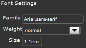
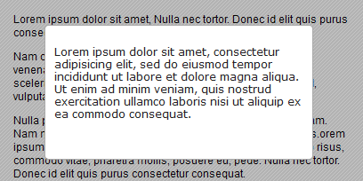

Il est maintenant courant d'utiliser des librairies Javascript telles que Prototype, Mootools, ou jQuery. En effet, elles permettent un gain de temps énorme lors du développement d'un site web, et leur apprentissage est d'une facilité exceptionnelle. De plus, beaucoup de casses-têtes tels que la compatibilité entre navigateurs et l'accessibilité sont résolus automatiquement !
Le développement de ces « scripts miracles » a entraîné la création de petits modules externes utilisant jQuery et permettant à leur utilisateur de ne pas devoir ré-inventer la roue à chaque projet. C'est le cas de jQuery UI, qui concentre plusieurs plugins très pratiques tels que le Slider, le Datepicker ou la Progressbar.
Cependant, il est parfois difficile et déroutant de se servir de jQuery UI, surtout lorsque l'on commence à utiliser cette librairie. Je suis donc là pour vous apprendre les rudiments de ces fabuleuses choses que sont les interfaces utilisateur de jQuery !
Le tutoriel commence ici. J'espère que vous apprécierez d'apprendre à utiliser jQuery UI, car croyez-moi, cette petite bête devient de plus en plus utilisée. Même le Site du Zéro, sur lequel vous vous trouvez en ce moment, n'hésite pas à exploiter sa puissance !
Avant de commencer à entrer dans le cœur du sujet, il est nécessaire d'être préparé. En effet, la préparation est une étape très importante dans la vie d'un développeur, de même que l'organisation. C'est pourquoi il ne faut pas se lancer dans la conception d'un site web sans avoir réfléchi à certaines questions avant, à moins d'avoir un fabuleux éclair de génie. :lol:
Ce chapitre est donc consacré à la mise en place des librairies dans nos pages ; en effet, jQuery UI a une architecture particulière, et il convient de connaître son fonctionnement pour l'utiliser correctement.
Si vous avez déjà fait un peu de jQuery, vous connaissez la syntaxe du langage. En effet, les créateurs de la librairie jQuery ont pensé à une manière efficace et rapide de manipuler le DOM, les évènements et beaucoup d'autres choses. Ainsi, pour rappel, au lieu de faire ceci en Javascript pur :
var id = document.getElementById('idDiv');
id.style.width = '150px';
On fera simplement cela en jQuery :
$('#idDiv').css({ width : '150px' });
Cela a le mérite d'être très lisible, surtout lorsqu'un code fait plusieurs centaines de lignes !
Seulement, les créateurs de jQuery ont voulu aller encore plus loin en développant jQuery UI. C'est une sorte de super-librairie, qui peut être considérée comme un complément à jQuery. Elle prend en charge ce qu'on appelle des interfaces utilisateur, qui permettent une interactivité accrue avec le visiteur du site web, et facile à mettre en place. Mais ne vous y trompez pas : c'est encore et toujours du Javascript ! Nous allons donc, au long de ce tutoriel, apprendre à utiliser ces UI à bon escient, afin de booster formidablement l'interactivité de votre site web.
Une grande question souvent posée, lorsqu'il s'agit d'utiliser une librairie, c'est de savoir si nos codes seront compatibles partout. De même, jQuery UI construit lui-même la structure HTML dont il a besoin pour fonctionner, et ce pour chacun des plugins qu'il prend en charge. Eh bien, sachez-le dès maintenant, vous n'avez presque pas de soucis à vous faire concernant tout cela ! En effet, jQuery et jQuery UI sont supportés par pratiquement tous les navigateurs, hormis les très vieilles versions d'Internet Explorer.
Navigateurs
Compatibilité
Internet Explorer 6 et plus
Oui
Firefox 2 et plus
Oui
Opera 9 et plus
Oui
Safari 3 et plus
Oui
Google Chrome
Oui
La structure HTML générée est vraiment très propre et valide W3C, ce qui vous assure un confort maximal au niveau de l'accessibilité. De plus, pour les personnes ou les navigateurs ne supportant malheureusement pas Javascript, le contenu ne sera pas caché, vous assurant en plus de ne pas dissimuler des informations au robot de Google, ce qui est plutôt bon pour votre référencement.
Comme vous devriez le savoir, une librairie est en fait un code externe créé et développé par des gens très doués, qui ont pour objectif d'aider les apprentis développeurs que nous sommes. Ainsi, la librairie jQuery est présentée sous la forme d'un fichier Javascript de plusieurs milliers de lignes qui contient le fonctionnement interne de celle-ci. Il en va de même pour jQuery UI (interfaces utilisateur), le code principal est contenu dans un seul et même fichier, et nécessite l'inclusion de jQuery pour être utilisé. C'est donc un complément de la librairie "principale" : utiliser les interfaces utilisateur implique d'utiliser jQuery, mais utiliser jQuery n'implique pas forcément d'utiliser les interfaces utilisateur.
Vous me suivez ? :-° Si c'est un peu difficile à comprendre, je vous invite à regarder attentivement le schéma ci-dessous :
On peut voir que la librairie principale, à savoir jQuery, est incluse sur le fichier ma_page.html. Elle ne dépend en aucun cas de la librairie secondaire, à savoir jQuery UI. En revanche, le contraire est vrai : les interfaces utilisateur, pour fonctionner, ont besoin de la librairie jQuery.
Les interfaces utilisateur sont des modules très pratiques qui peuvent faire la différence : en effet, ils permettent une plus grande interactivité entre le site web et son visiteur. Un utilisateur lambda préférera une interface ergonomique, jolie, bien présentée, rapide, pratique et utile. jQuery UI fournit toutes ces qualités. Ainsi, au terme de votre apprentissage, vous serez capable de réaliser un espace membre avancé, des animations encore plus poussées que celles de jQuery, une ergonomie avancée pour votre site web, et beaucoup d'autres choses !
Maintenant que nous avons éclairci ces différents points, nous allons pouvoir commencer à obtenir les différents fichiers. :)
Sans les librairies, difficile de les utiliser. :-° Nous allons donc télécharger les fichiers nécessaires sur le site officiel, puis nous étudierons l'architecture de jQuery UI et son inclusion dans une page web.
Rendez-vous donc en premier lieu sur le site de jQuery UI, puis dans la section Download. Le site met à disposition du développeur la possibilité de customiser son pack de plugins, dans le cas où il ne voudrait pas toutes les fonctions de la librairie. De même, un thème est fourni, vous permettant de ne pas avoir à construire le style CSS des interfaces utilisateur depuis zéro, le thème par défaut étant "UI lightness" :
Il vous est également possible de faire votre thème vous-même en vous rendant sur cette page, et en téléchargeant ensuite le fichier. Un chapitre de cette première partie est consacré à l'utilisation de ce ThemeRoller.
Mise en place des fichiers
Comme nous allons tout utiliser au cours de ce tutoriel, nous allons télécharger tous les fichiers proposés. Toutes les cases étant cochées par défaut sur le site, n'y touchez pas, et cliquez sur le bouton "Download" situé à droite (prenez la dernière version, qui est actuellement là 1.8.18). Une fois l'archive réceptionnée, décompressez-la : vous obtenez un dossier js/ et un dossier development-bundle/. C'est dans ce dernier que se trouvent les plugins ; en effet, chaque fonction est placée dans un fichier Javascript unique. Ce dossier contient plusieurs autres dossiers qui ne nous serviront pas. Je vous invite donc à supprimer :
le dossier demos/ ;
le dossier docs/ ;
et le dossier external/.
Une fois ceci fait, rendez-vous dans le dossier ui/. Vous pouvez remarquer que chaque fonction de la librairie est contenue dans une fichier Javascript unique. Il nous faudra par la suite inclure ceux qui nous intéresseront pour pouvoir utiliser les fonctions que nous souhaitons. De même, il nous faudra penser à inclure les librairies dont nous avons besoin, à savoir jQuery et le fichier principal de jQuery UI. Inclure le thème fourni par jQuery UI est très recommandé, mais pas obligatoire si vous créez votre propre fichier CSS. Je me suis permis de schématiser grossièrement ce que devrait être le contenu de votre dossier de projet :
Attends, tu es en train de nous dire qu'on va devoir à chaque fois inclure tous ces fichiers ?! :waw:
Heureusement, il y a plus simple. Google a mis en place pour les développeurs une bibliothèque complète de librairies à inclure directement sur vos pages. Les fichiers sont placés sur leurs serveurs, et ne prennent donc pas de place sur le vôtre. Cela permet en plus un chargement plus rapide des différentes librairies grâce à une mise en cache, et diminue la bande passante de votre site web.
Comme je suis une personne gentille et généreuse, je vous donne le code HTML de base qui permet de charger les librairies depuis l'API Google :
<!DOCTYPE html>
<html>
<head>
<meta charset="iso-8859-1" />
<title>Votre titre</title>
<!-- inclusion du style CSS de base -->
<link rel="stylesheet" type="text/css" href="http://ajax.googleapis.com/ajax/libs/jqueryui/1.8.12/themes/smoothness/jquery-ui.css" />
</head>
<body>
<!-- inclusion des librairies jQuery et jQuery UI (fichier principal et plugins) -->
<script type="text/javascript" src="http://ajax.googleapis.com/ajax/libs/jquery/1.5.2/jquery.min.js"></script>
<script type="text/javascript" src="http://ajax.googleapis.com/ajax/libs/jqueryui/1.8.12/jquery-ui.min.js"></script>
</body>
</html>
Vous êtes maintenant fin prêt à travailler !
Maintenant que vous êtes paré à coder, nous allons commencer à étudier plus concrètement jQuery UI. Cette librairie peut en fait se découper en trois grosses parties, et celles-ci composeront ce tutoriel. Mais avant d'étudier tout ça, nous devons encore voir quelques petites choses ! Je vous invite donc à vous rendre dans le prochain chapitre. :)
Il nous reste encore quelques petites choses à régler avant de nous lancer dans la grande aventure. En effet, plus les habitudes et l'environnement de travail sont bons, plus rapide et efficace sera le développement. C'est pourquoi j'aimerais clarifier quelques points, tels que l'utilisation de jQuery, son contexte, ou les bonnes méthodes à adopter en Javascript.
Certaines fonctions jQuery sont très utiles et nous permettront de gagner considérablement du temps. C'est le cas des évènements, des effets, et des fonctions utiles de la librairie. Cette sous-partie sera donc l'occasion pour moi de faire le point là-dessus.
jQuery met à disposition des méthodes à connaître absolument lorsqu'on développe avec cette librairie. En voici un bref rappel.
La fonction jQuery()
C'est la principale fonction, qui peut être abrégée avec le signe $ (dollar). Elle permet d'indiquer que l'on utilise jQuery, et est utilisée pratiquement tout le temps. Elle sert aussi à nous assurer que le document HTML est bien chargé avant d'utiliser nos fonctions. Durant tout le cours, nos codes jQuery seront placés dans la fonction suivante :
$(function(){
// Ici se placera tout notre code
});
La fonction attr()
Une des fonctions très importantes de la librairie est la fonction attr(). En effet, elle permet de récupérer, de modifier ou de supprimer n'importe quel attribut de l'élément sur lequel on l'utilise. Ainsi, si par exemple je veux récupérer les valeurs contenues dans l'attribut alt d'une image, le code suivant sera adapté :
// code contenu dans la fonction jQuery
var attributAlt = $('img').attr('alt');
// si je voulais modifier cet attribut, je ferais ceci :
$('img').attr('alt', 'Nouvelle valeur');
J'espère que vous connaissiez cette fonction, car nous allons l'utiliser très souvent !
addClass() et removeClass()
Ces fonctions permettent respectivement d'ajouter une valeur à l'attribut class d'un élément HTML, ou d'en supprimer une. Il suffit de la spécifier en argument. Ainsi, le code suivant me permet d'ajouter la classe selected à mes paragraphes :
$('p').addClass('selected');
Si mon élément contenait déjà une classe, celle-ci ne sera pas écrasée ; ma nouvelle classe sera simplement ajoutée en complément à la première. Si je voulais ensuite la supprimer, il me suffirait de faire :
$('p').removeClass('selected');
Rien de plus simple ! ^^
La fonction html()
Fonction très utile que voici. En utilisant cette fonction, vous pourrez récupérer ou modifier le contenu d'un élément HTML. Qu'il est loin le temps de innerHTML() ! Il nous suffit maintenant de taper le code suivant pour récupérer le contenu de mon dernier paragraphe :
// récupère le contenu du dernier paragraphe trouvé dans la variable "contenu"
var contenu = $('p:last').html();
Cette fonction retourne tout le contenu et j'insiste là-dessus : vous récupérerez même les balises HTML s'il y en a. Il est possible de modifier ce que l'élément HTML contient en spécifiant en argument ce que l'on veut insérer ; attention tout de même, cela écrasera tout le contenu existant et le remplacera.
La fonction text()
Cette fonction fait la même chose que la fonction html(), mais ne retourne que les données textuelles. Ainsi, vous n'obtiendrez pas de balises HTML si vous récupérez le contenu d'un élément HTML en contenant. Par exemple, j'ai un paragraphe contenant des balises <strong></strong>, comme ceci :
<p><strong>Ceci est important</strong>, mais ceci ne l'est pas.</p>
Maintenant, en récupérant le contenu du paragraphe avec text() :
var contenu = $('p').text();
alert(contenu);
Cette alerte me renverra :
Citation
Ceci est important, mais ceci ne l'est pas.
La fonction val()
Enfin, la dernière fonction que je voudrais revoir avec vous est la fonction val(). On l'utilise dans le contexte des formulaires, car elle permet de récupérer et de modifier la valeur d'un élément. Ainsi, si je veux récupérer puis modifier la valeur de l'attribut value d'un champ de texte, je taperai :
// récupération du contenu du champ de texte
var inputText = $('input:text').val();
// modification du contenu du champ de text
$('input:text').val('Nouvelle valeur');
C'est une fonction très utile encore une fois, et nous l'utiliserons souvent étant donné que les formulaires sont très présents dans le domaine des interfaces utilisateur.
Nous avons maintenant terminé ce rappel des fonctions importantes de jQuery. J'insiste là-dessus, car ces méthodes sont fondamentales lorsqu'on utilise cette librairie, et je veux que tout le monde puisse me suivre durant ce tutoriel. Nous allons maintenant pouvoir passer à la suite.
J'aimerais encore une fois faire le point sur une chose. J'estime que pour utiliser jQuery UI, qui rappelons-le est une série de plugins (synonyme d'extensions), il faut connaître le fonctionnement d'une extension en Javascript. C'est comme ça partout : en langage PHP, si vous ne connaissez pas le fonctionnement concret de la programmation orientée objet, vous ne serez pas en mesure d'exploiter toute la puissance d'un framework. En Javascript, il est possible de développer ce qu'on appelle des plugins, que l'on appellera ensuite en tant que méthode sur nos différents éléments.
Par exemple, imaginons que j'ai créé un plugin permettant d'afficher "Bonjour" dans un élément donné. C'est inutile, mais c'est pour l'exemple. Dans ce cas, j'appellerai mon extension ainsi :
$('p').direBonjour();
C'est le mode de fonctionnement des plugins de jQuery UI.
Les paramètres, ou options
Pour plus de possibilités, les créateurs des plugins de jQuery UI on mit en place tout un tas de paramètres pour manipuler tout cela à notre aise. Ça nous permet donc une grande personnalisation. Pour l'exemple, en reprenant mon code précédent et en imaginant que je dispose d'un paramètre me permettant de changer la langue dans laquelle est dite "Bonjour", je pourrais faire :
$('p').direBonjour({
language : 'english'
});
Mon paramètre language vaut à présent english. Un plugin peut avoir une infinité de paramètres.
Dernier point que j'aimerais aborder avant de nous lancer : les logiciels et les liens utiles au développement en jQuery. En effet, on se retrouve parfois, et même souvent, à ne savoir que faire lorsqu'un de nos codes ne fonctionne pas. Pour cela, il existe plusieurs solutions :
Consulter la documentation.
S'aider d'un débogueur.
Demander de l'aide.
Avant d'en arriver à la troisième option, il est nécessaire de chercher par soi-même. En faisant cela, on comprend mieux une erreur et cela nous permet de ne plus la faire. On en retire aussi une satisfaction plus conséquente.
Utiliser la documentation
Il ne faut surtout pas la négliger ; si elle peut paraître difficile à aborder pour certaines personnes, elle est pourtant très complète. Je sais que la documentation officielle est écrite en anglais, cependant, un webmaster francophone a mis en place une traduction sur son site web. Vous pourrez la retrouver sur cette page, donc n'hésitez surtout pas à vous en servir.
Les différentes fonctionnalités de la librairie sont triées suivant leur rôle et leur catégorie.
Firebug, une extension Firefox très utile
Vous connaissez sûrement Firebug, une extension pour le navigateur Mozilla Firefox, qui est célèbre parmi les développeurs. C'est un plugin très puissant qui prend en charge beaucoup de fonctions, et vous permettra de déceler les erreurs de votre code jQuery.
Pour une explication poussée, je vous invite à aller lire ce très bon article.
Votre cerveau est maintenant à jour ! :p Les prochains chapitres seront bien plus techniques et passionnants, vous pouvez me croire, et vous serez étonné de ce qu'on peut faire avec jQuery UI. Certaines choses étaient réputées impossibles à faire sans l'utilisation de Flash, jusqu'à ce qu'arrive notre librairie préférée. Pas de doute, vous allez aimer.
Je sais que vous êtes vraiment impatient de commencer à voir à quoi ressemblent concrètement les plugins de jQuery UI (et pour cause), mais avant, nous allons étudier un outil mis à disposition par le site officiel. Intitulé ThemeRoller, cet éditeur de thème très pratique va nous permettre de customiser notre thème. J'en avais parlé brièvement dans le premier chapitre de ce tutoriel, et j'aimerais revenir dessus.
C'est le dernier chapitre de cette première partie, alors courage ! ;)
Le ThemeRoller se décompose en plusieurs parties. À votre gauche se trouvent les différents éléments modifiables. C'est ici que l'on va entrer nos propres données. Le contenu principal de la page montre les différents plugins, dont le design est celui de base. Les modifications seront exécutées en temps réel, bien que ce soit parfois un peu lent à apparaître. Mais on ne va pas faire les fines bouches, n'est-ce pas ? :-°
Les "font settings"
Les "font settings", dont la traduction française est "réglages de la police", vont nous permettre comme leur nom l'indique de modifier les propriétés de la police des fameux plugins. Par défaut, la police est en Verdana (Arial, sans-serif), de taille 1.1 em et n'est pas en gras.
Vous allez donc pouvoir commencer à modifier ceci comme bon vous semble. Personnellement, je vais mettre la police en Arial, sans modifier les deux autres propriétés.

Le "corner radius"
Le ThemeRoller de jQuery UI utilise évidemment des propriétés CSS3. La propriété border-radius, si vous ne le savez pas, permet d'arrondir les coins d'un élément donné. Le "corner radius" permet d'indiquer une valeur d'arrondissement. Ainsi, dans notre cas, les coins des blocs conteneurs sont arrondis de 4px, qui est la valeur par défaut. Voici par exemple le résultat si je monte à 15px :
Le "header" et la "toolbar"
On entre dans la partie intéressante. :) Ce sont les propriétés CSS qui stylisent l'arrière-plan des en-têtes présents sur certains plugins.
Le ThemeRoller met à disposition un système de patterns transparents, qui permet d'ajouter un effet de texture, comme un dégradé, un effet de brillance, un quadrillage, etc. La première donnée à entrer est la valeur hexadécimal de la couleur de l'arrière-plan. La deuxième est le type de pattern, et la troisième est son opacité. Pour un effet moderne, je vais y mettre un léger dégradé noir, avec une opacité de 30% pour mon pattern :
Mais on ne va rien y voir, sur ton en-tête, le texte est illisible !
Oui, et c'est pour ça que les couleurs du texte et des icônes sont modifiables. Cela fonctionne de la même façon que pour la couleur d'arrière-plan. Pour mon exemple, je vais mettre la couleur du texte en blanc :
Le "content"
Même chose, sauf que nous allons modifier ici le style CSS du contenu, ce qui contiendra le texte principal. J'y ai entré les réglages suivants :
Les éléments cliquables, dans jQuery UI, sont principalement les boutons, les onglets et les icônes. Ces dernières ne seront pas abordées ici.
On distingue en général trois niveaux lorsqu'il s'agit de styliser un élément cliquable : l'apparence dite par défaut, quand aucune action n'est lancée ; l'apparence lorsqu'on passe la souris sur l'élément (appelé hover en anglais) ; et l'apparence lorsqu'on clique dessus (appelé active en anglais). Il va donc nous falloir définir, pour chacun de ces niveaux, un style particulier.
Style par défaut : il correspond sur le ThemeRoller à la section "Clickable: default state".
Style hover : il correspond à la section "Clickable: hover state".
Style active : il correspond à la section "Clickable: active state".
La définition des propriétés se fait de la même façon que précédemment : il vous faut spécifier la couleur de background, la texture, son opacité, et la couleur de la bordure et du texte.
Les "overlays"
Overlay désigne l'élément qui va recouvrir la page lorsqu'on ouvrira une nouvelle fenêtre. Cela permet une mise en valeur, et un bon niveau esthétique. C'est en général une texture que l'on va répéter sur les axes x et y, pour former un arrière-plan semi-transparent. Exemple :

Ici, toute la partie grisée représente l'overlay ; on peut d'ailleurs distinguer un pattern.
La modification des propriétés se fait dans la section "Modal Screen for Overlays", encore une fois de la même manière, cette fois en définissant en plus l'opacité de l'overlay.
Les "shadows"
Vous l'aurez tout de suite compris, on va parler ici des ombres. :) Les propriétés CSS vont légèrement changer, et leur modification se fait dans la section "Drop Shadows" du menu de gauche. Les premières fonctions ne changent pas : couleur du background, pattern et opacité. En dessous se trouve l'opacité de l'ombre intégrale. Là où ça se complique un peu, c'est pour les propriétés de la forme de l'ombre. En effet, il nous est possible de modifier son étendue, sa place, ainsi que la valeur d'arrondi de ses coins (rappelez-vous les corner radius). Voici à quoi correspondent les propriétés sur le ThemeRoller :
"Shadow Thickness" : c'est la taille ou l'étendue de l'ombre.
"Top offset" et "Left offset" : ce sont les décalages de l'ombre par rapport au bloc mis en valeur.
"Corners" : ce sont les arrondis de l'ombre.
Pour mon exemple, avec une étendue de 2px, des décalages à 10px et des coins arrondis de 8px :
Une fois notre thème terminé, il va nous falloir le télécharger, sinon ça ne servirait pas à grand-chose. :p Il vous suffit pour cela de cliquer sur le bouton Download Theme présent dans le menu de gauche. Vous retournerez sur la page de téléchargement de la librairie. Le problème, c'est qu'on ne veut que notre thème, puisqu'on a déjà le reste des fichiers. Qu'à cela ne tienne, cliquez sur "Deselect all components" afin de réduire le poids de l'archive, et téléchargez le tout.
Une fois le fichier réceptionné, décompressez-le, et allez chercher votre thème dans le fichier css/. Copiez le dossier custom-theme, et allez le coller dans votre vrai dossier jQuery UI, à l'emplacement votre_dossier/development-bundle/themes/. Il ne vous reste plus qu'à renommer votre fichier CSS et à l'inclure dans vos pages ! :)
Je mets à votre disposition le thème que j'ai concocté pour mon exemple, et que j'utiliserai pour le reste du tutoriel.
Ce chapitre est à présent terminé. Offrir de bons éléments graphiques à vos visiteurs est une chose importante, et le ThemeRoller de jQuery UI est un outil très pratique pour cela. Vous verrez que le thème a son importance tout au long de ce tutoriel, il permet une vraie finition de vos plugins !
Je vous invite à passer à la deuxième partie, où l'on parlera des interactions.
Bienvenue dans cette deuxième partie ! Nous étudierons ici les interactions, qui seront les actions les plus utiles que vous mettrez à disposition sur votre site. Les plugins rentrant dans cette catégorie sont au nombre de cinq seulement, mais sont parfois assez complexes à personnaliser. C'est pourquoi je vous recommande de lire plus attentivement les chapitres qui suivront.
Technique de plus en plus à la mode, le Drag & Drop permet en fait à l'utilisateur de prendre un élément, et de le déplacer à sa guise quelque part sur la page. C'est une définition grossière et approximative, j'en ai conscience, mais nous verrons cela plus en détail dans ce chapitre.
Le niveau monte d'un cran ; je vous conseille donc de relire attentivement le chapitre et de faire des tests par vous-même si vous n'avez pas tout compris.
Il serait dommage de commencer à vous apprendre à vous servir des plugins drag et drop si vous n'en connaissez pas le principe. C'est pourquoi je vais vous expliquer concrètement ce que sont ces bêtes-là.
Il faut savoir que le mot drag en anglais, dans le contexte présent, signifie quelque chose comme traîner, glisser en français. De la même manière, drop, toujours en anglais, veut dire quelque chose comme déposer. Ainsi, en ne se référant qu'à une traduction (certes approximative), on peut déjà saisir l'idée : on sélectionne un élément, pour le déposer autre part.
Allons plus loin
Le "drag"
En Javascript, le drag se fait en fait grâce à un système de coordonnées. Je ne vais pas entrer dans les détails, mais si vous ne le savez pas, sachez que votre écran, et plus précisément la fenêtre de votre navigateur, possède un axe x et un axe y. Ainsi, grâce à des méthodes Javascript et des évènements tels que mousedown, mousemove et mouseup, on peut connaître les coordonnées de votre curseur, et ainsi les "transmettre" à l'élément déplacé. Ce dernier sera alors capable de suivre votre souris jusqu'à ce que vous le lâchiez. C'est ce qu'on appelle le drag.
Le "drop"
Ensuite, lorsque vous relâchez l'élément sélectionné, la technique du drop consiste à détruire tous les évènements associés. Cela a pour effet d'annuler la "transmission" de coordonnées, et donc d'immobiliser l'élément. Bien sûr, ceci n'est que la version simple ; il est possible de perfectionner le code, en faisant par exemple une zone spéciale où doit être déposé le bloc. S'il n'est pas placé là où on le veut, il retourne à sa place initiale.
Tout cela semble compliqué à réaliser, et en effet, ce n'est pas une mince affaire si on utilise du Javascript pur. Mais heureusement, des personnes ont pensé à tout, et ont créé jQuery UI justement pour nous éviter de nous casser la tête pour un système déjà réalisé des dizaines et des dizaines de fois. :p
Dans la librairie jQuery UI, le système de Drag & Drop ne forme pas un seul et même plugin. En effet, il est décomposé en deux parties distinctes, à savoir le plugin Draggable et le plugin Droppable. Nous allons les voir l'un après l'autre, car il faut comprendre comment fonctionne le déplacement d'élément avant d'attaquer la suite.
La fonctionnalité par défaut
Avant de se lancer dans des codes sophistiqués, il va nous falloir apprendre à utiliser la méthode dite par défaut. Oui, on ne commence pas par la fin ! :) Pour cela c'est très simple. Rappelez-vous dans la partie 1, je vous ai expliqué que les plugins devaient être appelés comme des méthodes. Si vous avez des problèmes de mémoire, je vous propose de la rafraîchir un peu. :) Nous avions imaginé que j'avais créé un petit plugin dont la fonction était de dire bonjour. Et ce plugin, il s'appelle sur notre élément de la même façon que les méthodes :
$('p').direBonjour();
Lors de l’exécution de ce code, mon paragraphe se chargera d'afficher Bonjour.
C'est exactement la même chose pour les plugins de jQuery UI. Le nom de notre plugin courant est le suivant : Draggable. Pour l'appeler, il nous suffira simplement de faire ceci :
$(function(){
$('#element').draggable(); // appel du plugin
});
L'élément qui aura pour identifiant le mot element sera déplaçable grâce au super plugin de la librairie ! Si c'est pas magique ! :D
Améliorons notre effet
Cette interaction est jolie, bien faite et pratique, oui. Mais pour l'instant, ça ne ressemble pas à quelque chose d'ultra-sophistiqué ! En effet, quel intérêt pour le moment de donner la possibilité au visiteur de déplacer un bloc avec un peu de texte à l'intérieur ? La réponse à cette question est évidemment aucun. Les développeurs de jQuery UI ont donc mis à notre disposition une série de paramètres, afin de personnaliser et d'améliorer l'interaction produite. Nous allons voir les principaux, ceux dont vous vous servirez le plus. Il n'y en a aucun d'inutile, comprenez-le bien, mais certains présentent un plus fort intérêt pour nous que d'autres.
Limiter le déplacement
Il y a deux façons de limiter le déplacement :
En spécifiant une restriction au niveau de l'axe (x ou y).
En spécifiant une zone restrictive.
Ce n'est peut-être pas spécialement clair, mais il faut retenir qu'il n'y a pas qu'une seule façon de restreindre le mouvement d'un bloc. Nous allons nous intéresser à la première méthode, qui est aussi la plus simple à comprendre, à savoir la restriction au niveau des axes x et y.
Pour cela, le paramètre à modifier se nomme axis. Il suffit d'appeler cette option, et de lui donner soit la valeur "x", soit la valeur "y" :
$('.drag1').draggable({
axis : 'x'
});
// le bloc ayant pour classe la valeur "drag1" ne pourra être déplacé qu'au niveau horizontal
$('.drag2').draggable({
axis : 'y'
});
// le bloc ayant pour classe la valeur "drag2" ne pourra être déplacé qu'au niveau vertical
La deuxième façon est à peine plus compliquée à comprendre. Le paramètre à modifier n'est pas le même, et se nomme containment. Il prend pour valeur la classe ou l'identifiant de l'élément qui jouera le rôle d'une zone, d'où notre bloc déplaçable ne pourra pas partir. Voici un schéma illustrant l'effet et le fonctionnement de ce paramètre :
Grâce à cela, mon bloc ayant drag pour id ne pourra pas sortir de mon bloc ayant limitation pour id.
Définir un magnétisme
Le magnétisme, comme son nom l'indique, est en général utilisé pour rapprocher le bloc déplacé d'un autre bloc s'il en est près. Il y a, encore une fois, deux façons d'utiliser le magnétisme :
En modifiant le paramètre snap et en lui donnant pour valeur la classe ou l'identifiant du bloc exerçant le magnétisme.
En modifiant le paramètre grid et en lui donnant pour valeur un tableau contenant la longueur en pixels d'une unité sur l'axe x puis sur l'axe y.
Si ça vous semble compliqué à comprendre, sachez que c'est tout aussi dur de le définir. :p
Nous allons utiliser dans un premier temps le paramètre snap. Celui-ci peut prendre deux types de valeurs : soit une chaîne de caractères, soit tout simplement un booléen. Il faut savoir qu'il est fixé à false par défaut, ce qui veut donc dire qu'il n'est pas magnétique. Nous allons simplement modifier cette valeur, pour la passer à true.
$('#drag').draggable({
snap : true
});
S'il approche d'un autre élément, une fois trop près, il sera attiré automatiquement.
Pour pallier à ce problème, nous allons devoir spécifier la classe ou l'identifiant de l'élément exerçant l'attraction. Ainsi, même si on ne lui attribue pas le plugin draggable, l'effet fonctionnera.
$('#drag').draggable({
snap : '.draggable' // chaque élément ayant la classe "draggable" exercera une attraction
});
Je vous propose à présent de passe au paramètre grid. Il sert à créer une grille fictive, comme son nom l'indique, qui magnétisera directement et sur toute la page l'élément déplacé. Il nous suffira de passer un tableau au paramètre, contenant le nombre de pixels défini pour une unité sur l'axe x et l'axe y. Je pense que c'est un peu difficile à comprendre, donc je vous ai concocté un petit schéma, encore une fois. :-° Imaginons d'abord que nous avons un bloc div ayant drag pour identifiant. Nous définissons ensuite cet élément du DOM en tant qu'élément déplaçable, et lui passons une grille en paramètre :
Ma grille aura ainsi 20 pixels d'écart entre chacun de ses "barreaux", sur l'axe horizontal, et sur l'axe vertical.
Les flèches représentent la trajectoire donnée au bloc déplacé. On voit qu'il suit la grille, et ne peut pas glisser de façon fluide à cause de celle-ci. Cette méthode peut être pratique pour l'utilisateur dans le cas où il doit déplacer plusieurs blocs qui doivent au final être collés et rangés : cela facilite la précision, et donc l'expérience utilisateur.
Retour à l'envoyeur
Un élément déplacé, une fois lâché, peut retourner d'où il vient. Pratique dans le cas où vous souhaitez que l'utilisateur de votre site déplace un bloc dans un endroit précis : si l'élément n'est pas lâché dans la zone adéquate, il retournera à sa place initiale. Pour réaliser cette action, nous allons nous pencher sur le paramètre revert. Il prend pour valeur un simple booléen, qui est défini à false par défaut. En le passant à true, cela devrait fonctionner :
Et voilà, le bloc reviendra à sa place initiale une fois lâché. :D Je vous le redis, jQuery UI, c'est magique !
Nous allons maintenant nous intéresser au plugin Droppable. Vous vous êtes familiarisé avec l'action du déplacement, nous allons donc pouvoir la combiner pour réaliser un vrai Drag & Drop.
Nous allons enfin nous intéresser au fameux plugin Droppable. Pourquoi fameux ? Parce que couplé avec le plugin Draggable, il va nous permettre de réaliser un système de Drag & Drop (glisser-déposer). Pour rappel, c'est une fonction de plus en plus répandue sur le web, qui permet au visiteur de déplacer un bloc HTML, puis de le déposer dans une zone, afin de déclencher une action.
Les fonctionnalités de ce système sont très nombreuses : upload de fichiers, en les déplaçant directement de votre disque dur vers la zone d'envoi ; jeux par navigateur ; agencement personnalisé d'un espace pour le visiteur ; et tout un tas d'autres choses permettant d'améliorer l'ergonomie de votre site. Mais avant de réaliser toutes ces choses plus ou moins complexes, il va nous falloir apprendre à créer un système simple. Pour cela, il faut se dire que le Drag & Drop se réalise en deux temps :
le "glisser", réalisable avec le plugin Draggable, et que nous venons de voir ;
et le "déposer", que nous allons apprendre à faire ici.
La fonction par défaut
Encore une fois, je vais commencer par vous montrer le plus simple : comment initialiser la fonction du glisser-déposer. C'est en fait très facile, le principe résidant dans le fait qu'il faut définir un élément comme étant déplaçable, et définir un autre élément qui fera office de zone où l'on déposera le premier bloc.
$('#drag').draggable(); // ce bloc sera déplaçable
$('#drop').droppable(); // ce bloc servira de zone de dépôt
Effectivement, ça fonctionne. Mais comment peut-on le savoir ? En effet, lorsqu'on dépose notre élément dans la zone appropriée, rien ne se passe. o_O
C'est parfaitement normal ! Eh oui, nous n'avons défini aucune action à réaliser une fois le déplacement terminé. Pour faire cela, il faut passer par un évènement, qui prendra comme valeur une fonction dite de callback, dans laquelle nous inscrirons notre code à exécuter. Son nom n'est autre que drop :
$('#drop').droppable({
drop : function(){
alert('Action terminée !'); // cette alerte s'exécutera une fois le bloc déposé
}
});
À partir de là, il vous est déjà possible de faire une foule de petites choses, et nous pourrions effectivement nous arrêter là. Seulement, j'aimerais vous montrer deux paramètres très pratiques avant de continuer ce tutoriel.
Limiter les éléments acceptés
Actuellement, notre zone de dépôt accepte tout élément pouvant être déplacé à l'intérieur. Mais qu'en est-il si vous ne souhaitez pas que l'utilisateur puisse y mettre tout ce qui lui chante ? Il va nous falloir pour cela utiliser un paramètre, qui se nomme accept. Il prend pour valeur l'identifiant ou la classe de l'élément accepté. Ainsi, imaginons que je possède deux blocs div à déplacer, et un troisième faisant office de zone de dépôt :
<div id="drag">
<p>Ceci est un élément valide</p>
</div>
<div id="not-drag">
<p>Ceci n'est pas un élément valide</p>
</div>
<div id="drop">
<p>Déposer ici</p>
</div>
Mais comme je ne veux pas que le deuxième bloc soit accepté par ma zone de dépôt, il me suffira de faire ceci en jQuery :
$('#drag').draggable();
$('#not-drag').draggable();
$('#drop').droppable({
accept : '#drag', // je n'accepte que le bloc ayant "drag" pour id
drop : function(){
alert('Action terminée !');
}
});
Je vous ai appris précédemment à renvoyer l'élément déplacé à sa place. Seulement, c'était assez limité, étant donné que l'action s'effectuait à chaque fois. Je vous avais aussi parlé du fait qu'il est possible de renvoyer un bloc à sa place s'il n'est pas déposé dans la zone adéquate. C'est ce que nous allons apprendre à faire tout de suite.
Nous allons agir grâce à deux mots-clés : valid et invalid. Le premier permet à l'élément d'être renvoyé à sa place s'il est déposé dans la bonne zone de dépôt, alors que le deuxième fait le contraire. Ce dernier est donc un peu plus intéressant. Je vous donne un code d'exemple, même si je pense que vous avez compris le principe :
$('#valid').draggable({
revert : 'valid' // sera renvoyé à sa place s'il est déposé dans #drop
});
$('#invalid').draggable({
revert : 'invalid' // sera renvoyé à sa place s'il n'est pas déposé dans #drop
});
$('#drop').droppable({
drop : function(){
alert('Action terminée !');
}
});
Nous voilà maintenant au bout ! Je tiens à préciser que ce chapitre n'est pas exhaustif. En effet, je n'ai pas parlé de pas mal de paramètres, qui peuvent pourtant se révéler utiles selon les cas. Certains évènements mériteraient également que l'on parle d'eux, mais je ne l'ai pas fait, afin de ne pas vous embrouiller plus que nécessaire. En fin de tutoriel, vous pourrez retrouver une sélection et une explication des différents paramètres à approfondir.
Nous allons donc pouvoir passer au prochain chapitre, qui traitera le plugin Resizable. C'est une interaction très prisée et aimée des utilisateurs, car elle permet un agencement plus pointu des différents éléments d'une page web.
Ce chapitre sera consacré à l'étude des plugins Resizable et Selectable. Le premier permet de redimensionner à la volée un élément du DOM, ce qui s'avère être très pratique dans certains cas, comme par exemple la gestion des fenêtres d'un WebOS. Le deuxième, quant à lui, permet de sélectionner des éléments, et d'en récupérer les données, par exemple.
Les internautes sont en général très friands de ce genre de choses simples mais pratiques, donc assurez-vous de bien comprendre ce cours pour améliorer leur expérience lors de leur visite sur votre site !
Le chapitre précédent, qui je le rappelle traitait du Drag & Drop, était un peu long et brutal en tant que début de tutoriel. C'est pourquoi nous allons ralentir avec ce cours, qui va traiter des systèmes plus basiques.
Les interfaces utilisateur permettent une meilleure expérience au niveau de la visite d'un site web. Mais ce qui fait leur force, ce sont aussi les actions basiques qu'elles mettent en place, telles que le redimensionnement ou la sélection. Nous allons étudier ces deux points principaux dès maintenant, et vous verrez que malgré l'apparence simpliste que ces plugins semblent avoir, ils vous seront d'un grand secours lorsque vous commencerez à créer des applications complexes.
Les noms de ces interactions sont respectivement Resizable et Selectable. Mais comment fonctionnent-elles, concrètement ?
Une histoire de position
Le redimensionnement en Javascript se fait grâce à plusieurs fonctions natives, telles que offsetTop, offsetParent, clientY, clientX, etc. Elles permettent de récupérer les coordonnées de votre curseur de souris, puis, grâce à un calcul effectué avec les positions de l'élément, d'agir directement sur la largeur ou la hauteur de celui-ci. Encore une fois, cela peut vous paraître complexe. jQuery UI se charge de tout, et ce, en une seule ligne.
La sélection
La sélection d'éléments, elle, s'exécute encore une fois en agissant sur les coordonnées x et y de la souris de l'utilisateur. Les événements mousedown et mouseup sont également de mise, ce qui permet de commencer ou de stopper l'action exécutée. En exploitant les positions des éléments sélectionnés ou non, un calcul se charge de dire lesquels sont pris en compte.
J'estime que vous devez comprendre plus ou moins comment ça fonctionne en coulisse, pour pouvoir utiliser correctement les plugins mis à notre disposition. Nous allons donc pouvoir commencer à utiliser Resizable et Selectable et modeler notre DOM à notre guise. :D
Attaquons avec le plugin Resizable ! Jusque-là, nous avons vu comment initialiser une interface utilisateur, c'est-à-dire de la même façon qu'en appelant une méthode sur un élément. Le module de redimensionnement ne fait pas exception à la règle, et nous l'appelons donc comme ceci :
Ce qui est magique avec ce plugin, c'est que le redimensionnement s'effectue de trois façons différentes :
à l'horizontale ;
à la verticale ;
ou de façon libre.
Ainsi, même si vous pouvez voir cela comme un détail, l'utilisateur de votre site web ne sera jamais embêté s'il veut seulement allonger son élément en largeur et conserver la hauteur ! Croyez-moi, ce genre de fioriture s'avère être très pratique, et le visiteur en sera plus satisfait.
En revanche, si vous recherchez un effet un peu plus sophistiqué, il va nous falloir étudier les différentes options disponibles.
Améliorons notre effet
Préserver le ratio
Une des contraintes si vous mettez le redimensionnement à la volée à portée de mains de vos visiteurs, c'est le risque que ces derniers transforment votre élément de façon à ce que le ratio hauteur/largeur ne soit plus respecté.
Le ratio hauteur/largeur ? De quoi tu nous parles ? o_O
Ce qu'on appelle le ratio hauteur/largeur d'un élément, c'est le respect des proportions de celui-ci lors d'un redimensionnement. Par exemple, admettons que je possède un bloc div d'une hauteur de 150px et d'une largeur de 150px également. Je lui applique le plugin Resizable, afin de modeler ces propriétés à ma guise. Seulement, si j'agrandis seulement la largeur, et pas la hauteur, les proportions ne seront plus respectées ! Pour ce faire, j'aurais du agrandir la largeur et la hauteur de la même manière.
Un paramètre permet de forcer le respect du ratio hauteur/largeur. Il s'agit de aspectRatio, qui prend pour valeur soit un booléen, soit une fraction. En passant cette option à true, le ratio sera automatiquement pris en compte dans le redimensionnement : si vous agrandissez la largeur seulement, la hauteur suivra le mouvement.
$('#resize').resizable({
aspectRatio : true // respect du ratio
});
En spécifiant une fraction, vous conserverez le ratio d'une autre manière. En effet, la valeur du numérateur influera sur la largeur de l'élément, tandis que la hauteur sera influencée par la valeur du dénominateur. Cette fraction définit donc la proportionnalité à appliquer sur le bloc à redimensionner.
$('#resize').resizeable({
aspectRatio : 16 / 9 // respect du ratio selon ces proportions
});
Grâce à cette méthode, vous n'aurez plus de soucis à avoir concernant un non-respect des proportions à appliquer sur un élément.
Extremum des propriétés
Un second problème pourrait ensuite se poser : l'utilisateur a la possibilité d'agrandir et de rétrécir un élément du DOM autant qu'il le souhaite. Si votre site web possède des tailles strictes et que vous ne souhaitez pas que vos visiteurs puissent agrandir un élément à l'infini, il vous est possible d'indiquer une largeur et une hauteur maximum et/ou minimum. Le nom de ces paramètres est le même que ceux des propriétés CSS qui permettent de donner un extremum à la largeur et à la hauteur d'un bloc. Ils sont au nombre de quatre :
maxWidth, pour donner une valeur maximum à la largeur ;
minWidth, pour donner une largeur minimum à un élément ;
maxHeight, idem que pour le maximum de la largeur, mais cette fois pour la hauteur ;
et minHeight, idem que pour le minimum de la largeur, mais pour la hauteur.
Imaginons que je ne veuille pas que les visiteurs de mon site puissent agrandir un élément au-delà de 300px, et qu'ils ne puissent pas le rétrécir au-delà de 50px. Mon code sera alors le suivant :
Vous rappelez-vous du paramètre containment lorsque nous avons étudié le plugin Draggable ? Il nous permettait de spécifier une limite de déplacement lorsque l'élément à faire glisser était contenu dans un bloc parent. Eh bien, il est possible de donner une frontière similaire pour un élément redimensionné ! Le nom de l'option à utiliser est exactement le même, et prend la même sorte de valeur (la classe ou l'identifiant du bloc définissant les limites).
Ainsi, si je possède un élément contenu dans un bloc div ayant #limites pour identifiant, je taperai ce code pour l'empêcher d'avoir des dimensions supérieures à ce dernier :
Dans le contexte de jQuery UI, un helper est un petit élément ayant pour fonction principale d'aider, voire d'assister l'utilisateur. C'est un paramètre présent dans quasiment tous les plugins d'interactions de jQuery UI, même s'il est utilisé plutôt rarement. En revanche, on peut obtenir un effet très esthétique et pratique en s'en servant dans le plugin Resizable. Il va permettre à l'utilisateur de visualiser son action avant de l'exécuter.
Ce helper fonctionne avec une propriété CSS, propriété qui sera donnée en tant que valeur au paramètre. Le CSS va nous permettre de styliser tout cela, car le rendu est avant tout visuel. Je ne suis pas un webdesigner né, mais cette propriété devrait faire l'affaire pour mon exemple :
L'effet obtenu peut être vraiment génial, pour peu que vous ayez du goût ! :p
Ajoutons un peu d'animation
Le dernier paramètre qui pourrait vous être utile, même s'il tient plus de l'effet strictement visuel qu'utile, est animate. Ne le confondez pas avec la méthode animate() de jQuery, qui permet de réaliser des animations avancées. L'option que je vous montre permet d'ajouter un petit effet lors du redimensionnement d'un élément. Combiné avec un bon helper, on obtient quelque chose de vraiment sympa !
Il suffit de passer le paramètre à true pour l'utiliser :
$('#resize').resizable({
animate : true
});
Veillez cependant à ne pas en abuser : l'utilisateur pourrait au final être plus gêné qu'autre chose. Les effets visuels ne doivent pas être utilisés avec abus, car ils sont très vite encombrants si vous ne savez pas les gérer !
Nous en avons à présent terminé avec ce plugin. Vous avez constaté vous-même qu'on peut obtenir de très bons effets en ne partant pas de grand-chose, un simple redimensionnement ! Je propose de réitérer cet "exploit" avec un second plugin, Selectable, qui va nous permettre de travailler avec nos éléments du DOM et ce, seulement en les sélectionnant. :)
La sélection est une action utilisée pratiquement partout : sur votre système d'exploitation, dans les logiciels de retouche graphique, dans certaines applications, et maintenant sur les sites web, grâce à Javascript et plus particulièrement jQuery UI. La librairie met à disposition un plugin intitulé Selectable, dont la fonction est de permettre à l'utilisateur de sélectionner des éléments et d'exploiter l'action (récupération de valeurs, ajouts multiples dans un panier, gestionnaire d'images, etc.).
Nous allons dans cette sous-partie étudier plus particulièrement les évènements mis en place par le module, plutôt que les paramètres, qui sont bien moins exploitables. Je vous donnerai un mini TP à réaliser à la fin du mini-tuto, qui sera un avant-goût du premier vrai travail pratique que vous devrez effectuer un chapitre plus loin. :)
Initialisons le plugin
Ce plugin s'initialise d'une façon un peu particulière. En effet, pour pouvoir l'utiliser, il nous faut construire une liste en HTML. Les éléments qui la composeront, les balises <li></li>, seront sélectionnables. Nous appellerons le module sur la liste elle-même, qui se chargera du reste.
$('#selection').selectable(); // initialisation du plugin Selectable sur la liste <ul></ul>
A partir de là, ça fonctionne et vous pouvez commencer à utiliser cette interface utilisateur !
Ahem, on ne voit absolument rien lorsqu'on sélectionne des éléments ! :colere2:
Effectivement, j'ai oublié de vous dire qu'il fallait définir le style de deux classes CSS présentes dans le framework mis en place par jQuery UI. Ces deux classes sont les suivantes :
.ui-selecting, classe qui est affichée lors de la sélection d'éléments ;
.ui-selected, classe qui s'affiche lorsque vous avec terminé de sélectionner vos éléments.
Je vous conseille de faire quelque chose de plutôt sobre, par exemple :
Avec ça, vous n'avez plus de raison de râler, le plugin fonctionne bel et bien ! ^^ Ce qui est génial, c'est que les principes de base de la sélection sont respectés : vous pouvez par exemple presser la touche Ctrl et ainsi sélectionner plusieurs éléments même s'ils ne sont pas côte à côte.
Amusons-nous avec les évènements
Je ne vous en ai pas vraiment parlé jusque-là, mais sachez que les interfaces utilisateur de jQuery UI mettent en place leurs propres évènements. Cela permet de lancer une action, via une fonction, lors d'une première action exécutée par le visiteur. Vous ne vous rappelez pas de quelque chose ? Nous avons déjà utilisé un évènement lors du chapitre précédent ! En effet, nous avions indiqué drop, qui prenait pour valeur une fonction de callback. Je vous en avais expliqué assez vaguement le fonctionnement, mais nous aurons l'occasion dans cette sous-partie d'approfondir les évènements. :)
À la fin d'une sélection
Sélectionner des éléments dans une page web, c'est bien, mais en exploiter les données, c'est mieux ! :p En effet, rappelez-vous d'une chose essentielle : vous utilisez jQuery UI pour améliorer l'expérience utilisateur de vos visiteurs, et pas simplement pour faire joli. La fonction pratique doit primer sur la fonction esthétique, c'est une notion très importante. Ainsi, si vous voulez utiliser le plugin Selectable, il faut que celui-ci ait une utilité.
Nous allons donc apprendre à quoi sert l'évènement stop de ce module, et l'utiliser afin de retirer des données de nos éléments sélectionnés. Il vous faut l'écrire de la même façon que pour l'évènement drop :
$('#selection').selectable({
stop : function(){
// code à exécuter
}
});
L'évènement stop de ce plugin sert à exécuter du code lorsque la sélection est terminée. Ainsi, une fois l'action faite, nous pouvons indiquer un navigateur du visiteur d'afficher le contenu des éléments sélectionnés, par exemple. Un évènement prendra toujours une fonction de callback en guise de valeur.
Par exemple, imaginons que j'ai un bloc div qui me servira d'élément de réception pour mes données. Mon but est de récupérer le contenu des éléments que je sélectionne, une fois mon action terminée. Je vous conseille d'essayer de le faire par vous-même, pour vous entraîner. :) Il vous faudra utiliser la méthode each de jQuery, qui se chargera d'exécuter la même chose pour chaque élément trouvé.
$('#selection').selectable({
stop : function(){
$('#resultat').empty(); // je vide mon bloc de réception, au cas où il contiendrait déjà des informations (vous pouviez aussi utiliser la méthode text())
$('.ui-selected').each(function(){
$('#resultat').append( $(this).text() + ' ; ' ); // j'ajoute les données dans mon bloc grâce à append()
});
}
});
Il se peut que vous deviez lancer une action lors de la désélection d'un ou plusieurs élément(s), par exemple changer des propriétés de votre style CSS. Dans ce cas-là, un évènement est approprié, il s'agit de unselected. Il s'utilise encore une fois de la même manière que drop et stop, et prend en valeur une fonction.
Ce code affichera par exemple une alerte lors de la désélection d'éléments :
$('#selection').selectable({
unselected : function(){
alert('Vous venez de désélectionner un élément.');
}
});
Je n'ai malheureusement pas grand-chose à dire de plus au sujet de ce plugin ma foi assez basique. Son utilisation peut se faire de mille et une manières, pourtant, sa personnalisation n'est pas vraiment avancée. Les deux principaux évènements couramment utilisés sont décrits ici, j'estime donc que vous êtes prêt pour passer l'épreuve finale de ce chapitre. :p
Ce premier mini-TP va être l'occasion pour vous d'expérimenter tout ce que nous venons d'apprendre. Il vise aussi à vous préparer pour le vrai TP que vous devrez effectuer à la fin de cette première partie, où nous traitons les interactions. Trêve de blabla, venons-en aux faits ! :D
But du jeu
Le but de ce TP est de vous faire réaliser un petit système basique de panier. L'utilisateur a le choix entre cinq articles, par exemple, et doit les faire glisser dans son panier pour pouvoir ensuite les acheter. Bien sûr, il va vous falloir utiliser les plugins Draggable et Droppable pour réaliser ce module, et veiller à enlever l'article du "magasin" s'il est ajouté.
J'en profite pour rajouter une petite difficulté maintenant que vous connaissez le plugin Selectable : si l'acheteur a introduit un article qu'il ne voulait pas dans son panier par mégarde, il doit avoir la possibilité de l'enlever. Pour cela, utilisez la sélection, pour qu'il puisse supprimer un ou plusieurs objets en même temps de son panier. Et enfin, les articles supprimés du panier doivent évidemment retourner de là où ils viennent, c'est-à-dire à leur position de départ. :)
Indications supplémentaires
Je ne vais pas vous lâcher ainsi sans vous donner quelques indications supplémentaires. D'abord, pour que l'article s'ajoute correctement dans le panier, il va vous falloir le faire disparaître, récupérer son contenu et introduire ce dernier dans le panier. Vous faites ainsi d'une pierre deux coups : l'objet disparaît du "magasin" et est ajouté.
Ensuite, rappelez-vous que la sélection s'effectue une fois l'action terminée. Utilisez les évènements et la méthode each de jQuery pour réaliser l'action à chaque élément trouvé.
Enfin, une chose que je ne vous ai pas dite, c'est que le plugin Draggable doit être de nouveau initialisé une fois l'article supprimé du panier, car jQuery UI ne reconnaît pas le nouvel élément créé.
Résultat
Je vous propose un petit aperçu du résultat pour vous donner une idée de la chose :
Deux articles ont déjà été glissés dans le panier
Correction
Alors, comment cela s'est-il passé ? Que vous ayez réussi ou non, veillez à bien suivre la correction. Votre code ne ressemble sûrement pas au mien, mais s'il fonctionne, alors ne vous en faites pas, il n'est pas faux. Chacun a sa manière à lui de coder, et un système peut être réalisé de beaucoup de façons différentes.
La première chose à faire était de créer la structure HTML. Un code Javascript fonctionne en général en adéquation avec HTML. Personnellement, j'ai opté pour deux listes <ul></ul>, une pour les articles en magasin, et une autre pour les articles du panier.
La manipulation est ainsi facilitée, surtout pour le plugin Selectable.
Il fallait ensuite écrire le code jQuery. D'abord, nous devions initialiser les plugins sur nos différents éléments : il fallait rendre les objets du magasin déplaçables, déclarer le panier comme zone de dépôt, et spécifier la liste présente dans ce dernier comme sélectionnable.
Si vous avez commencé par là, vous étiez sur une très bonne voie. Le but était ensuite de sophistiquer nos modules en indiquant quelques paramètres facultatifs, mais tout de même utiles. Par exemple, il fallait dire à la zone de dépôt de n'accepter que les éléments provenant de notre magasin. Imaginez que vous ayez d'autres éléments déplaçables sur la page mais qui n'ont rien à voir avec votre système. Vous aurez forcément un conflit !
$('.objet').draggable({
revert : 'invalid', // l'élément est renvoyé à sa place s'il n'est pas déposé dans la bonne zone
cursor : 'move' // on modifie le curseur pour faciliter la compréhension du visiteur
});
$('#panier').droppable({
accept : '.objet' // la zone n'acceptera que les éléments ayant "objet" pour classe
});
$('.resultat').selectable();
Le plus dur était de créer la suite du code, c'est-à-dire de commencer à gérer les évènements pour déclencher les bonnes actions. Pour le plugin Droppable, il vous fallait utiliser l'évènement drop que nous avions déjà vu. Petite difficulté dont je ne vous avais pas parlé, la fonction de callback devait prendre deux arguments, dont l'un nous servait à définir l'élément courant (en train d'être déposé). La suite était très simple : on faisait disparaître l'élément grâce à fadeOut(), on récupérait le contenu, et on ajoutait cela à la liste du panier.
$('#panier').droppable({
accept : '.objet',
drop : function(event, ui){ // les deux arguments à spécifier (l'un définit l'event courant, l'autre l'élément courant)
var current = ui.draggable; // on entre l'élément courant dans une variable
var resultat = $('.resultat');
current.fadeOut(); // on fait disparaître notre élément
resultat.append('<li class="obj-panier">' + current.html() + '</li>'); // on ajoute dans le panier et on définit une classe à chaque élément
}
});
Si vous êtes arrivé jusque-là, je tiens à vous féliciter. Ce n'était pas vraiment une mince affaire, je vous l'accorde, et pour ceux qui n'auraient malheureusement pas réussi, sachez qu'un échec n'est jamais grave. Le tout est de comprendre vos erreurs et de ne plus les refaire la prochaine fois. :)
La suite n'était pas bien compliquée : il suffisait juste d'utiliser la méthode each() pour traite chaque élément du panier.
$('.resultat').selectable({
stop : function(){
$('.ui-selected', this).each(function(){ // on traite chaque élément ayant été sélectionné (this est facultatif, mais permet d'éviter des conflits)
$('#articles').append('<li class="objet">' + $(this).text() + '</li>'); // on ajoute le contenu de l'article dans le magasin
$(this).remove(); // on le supprime ensuite du panier
$('.objet').draggable({ // et on veille à redéfinir le plugin !
revert : 'invalid',
cursor : 'move'
});
});
}
});
Et voilà ! Notre système de panier est terminé. Certes, il est très basique, mais sachez que si vous êtes arrivé à le réaliser, vous êtes en excellente voie pour la suite. Je vous conseille de relire la correction si vous ne l'avez pas comprise, et de revoir les chapitres précédents si jamais vous n'avez vraiment pas réussi ce mini-TP.
Maintenant que vous êtes calés sur les quatre premiers plugins, nous allons attaquer le cinquième et dernier, qui s'intitule Sortable. Ce module va nous permettre de changer de place nos éléments, et sera très souvent couplé avec des widgets, que nous verrons dans la troisième partie de ce tutoriel.
Je vous invite donc à passer au chapitre suivant ! :)
Pfiou, ce n'était tout de même pas de tout repos ! Je vous avais promis un chapitre calme pour récupérer du Drag & Drop, mais j'ai dû me laisser emporter. :-° Qu'à cela ne tienne, nous allons souffler un peu lors de ce chapitre qui traitera de notre dernière interaction : le plugin Sortable. Nous attaquerons ensuite un TP, qui mettra votre talent et votre savoir à l'épreuve.
Ce mini-tutoriel sera donc destiné au rangement d'éléments. Le plugin Sortable permet à l'utilisateur d'organiser lui-même la page web, grâce à un inter-changement. Cela doit vous sembler flou, donc n'attendez plus, foncez !
Une fois de plus, je vais vous expliquer brièvement en quoi consiste l'interface utilisateur que nous allons étudier. Ce module intitulé Sortable permet d'organiser des éléments de notre page. Comprenez par là que vous pourrez changer un bloc de place, et le remplacer par un autre. Cela est très utile lorsque vous proposez par exemple à votre visiteur de lister ses choses à faire ; il peut les organiser dans l'ordre qu'il veut par la suite, grâce à Sortable ! :)
Ce plugin fonctionne de la même façon que Selectable, c'est-à-dire qu'il vous faudra construire une liste en HTML ; le module influencera directement les éléments de celle-ci. Le principe est un peu délicat à comprendre au premier abord, c'est pourquoi je vous propose un petit schéma explicatif.
Sortable propose une foule d'options et d'évènements, tous plus intéressants les uns que les autres. Nous allons en étudier les plus pratiques et utiles, comme d'habitude. ^^
Si le précédent plugin était avare de paramètres, celui que nous allons étudier est d'un tout autre acabit ! Il propose pas moins de vingt-cinq paramètres, dont la plupart pourront vous servir.
Limiter le déplacement
Retour de deux paramètres : axis et containment ! Vous en souvenez-vous ? Ils permettent respectivement de limiter le déplacement selon l'axe, ou selon le conteneur. Ils s'utilisent de la façon que nous connaissons :
axis prend pour valeur x ou y ;
containment prend pour valeur un élément du DOM ou un mot-clé tel que parent.
Connecter deux listes
Vous ne connaissez pas encore cette action. Un paramètre permet de connecter deux listes ensemble, afin de les faire interagir entre elles : vous pourrez en effet déplacer un élément dans une autre liste, par exemple. L'option à utiliser n'est autre que connectWith, qui prend pour valeur la classe ou l'identifiant de la liste connectée. Imaginons par exemple ces deux listes non-ordonnées :
J'ai conscience que vous pouvez prendre cette fonctionnalité comme étant un détail tout ce qu'il y a de plus facultatif. Et je vous le concède. Seulement, l'utilisateur est très attentif à ce genre de détails, qui peuvent l'aider à comprendre bien plus facilement le concept de votre système. Et un visiteur qui sait utiliser vos modules est souvent préférable à l'inverse. :p
L'option permettant de modifier l'apparence du curseur lors de l'action du visiteur est cursor. Il prend le type de curseur en tant que valeur. Les différents types sont détaillés sur cette page.
Exemple :
$('#sortable').sortable({
cursor : 'move' // le curseur prend l'apparence d'une icône de déplacement
});
Un autre paramètre lié au curseur permet de donner son emplacement par rapport à l'élément déplacé. Il se nomme cursorAt et prend en guise de valeur un objet contenant les valeurs de la position du curseur. Ces valeurs sont définies par left, right, top, bottom et sont à donner en pixels.
Ainsi, pour que mon curseur soit toujours à l'extrême gauche de mon élément, je taperai ceci :
$('#sortable').sortable({
cursor : 'move', // le curseur prend l'apparence d'une icône de déplacement
cursorAt : { left : 0 } // le curseur se place à la position 0 par rapport à la gauche de l'élément
});
Le dépôt dans une zone vide est un problème récurrent si, par exemple, un de vos éléments doit être couplé avec un autre. Cela se pose en général lorsque vous possédez deux listes ou plus inter-connectées, dont au moins l'une d'elles est vide. Si vous ne voulez pas que le visiteur puisse déposer un élément d'une liste dans une autre qui est vide, il existe une solution, qui s'appelle dropOnEmpty, et qui prend un booléen pour valeur.
Ainsi, il vous suffit de spécifier true ou false pour indiquer à jQuery que vous voulez ou ne voulez pas autoriser le dépôt dans une liste vide :
$('#sortable').sortable({
connectWith : 'ul',
dropOnEmpty : false // on indique que le dépôt en zone vide est interdit
});
Le placeholder
Dans le jargon du développement web, ou du moins de jQuery et HTML, un placeholder est un élément du DOM qui possède la faculté d'indiquer à l'utilisateur où déposer un bloc, que faire dans un champ de texte, ... Le but est donc d'aider et d'assister le visiteur. Le plugin que nous étudions permet de donner un placeholder à chaque zone où doit être déposé l'élément. L'option adéquate, placeholder, prend pour valeur la classe ou l'identifiant qui le stylisera. En général, on utilisera la classe .ui-state-highlight, qui est directement prise en charge par notre thème.
$('#sortable').sortable({
placeholder : '.ui-state-highlight' // stylise le placeholder
});
L'inconvénient, c'est que nos éléments n'ont pas forcément une taille fixe, ce qui engendre un bug sur la taille du placeholder. Un autre paramètre permet de forcer les dimensions de ce dernier, pour chaque élément. Il s'agit de forcePlaceholderSize, que l'on modifiera pour lui donner true comme valeur :
$('#sortable').sortable({
placeholder : '.ui-state-highlight',
forcePlaceholderSize : true // force le redimensionnement du placeholder
});
Vous vous souvenez du paramètre revert ? Eh bien, nous pouvons l'utiliser ici pour la troisième fois ! Jusqu'à présent, le retour était automatiquement fait par le plugin si l'élément déplacé n'était pas déposé à la bonne place. Mais avouez que l'effet n'avait rien de très esthétique... Du coup, je vous propose d'améliorer la chose en mettant l'option de renvoi à true.
$('#sortable').sortable({
revert : true
});
Autres options plus ou moins utiles
Il existe d'autres options qui peuvent se révéler utiles selon les cas, bien que plus rarement. Elles permettent globalement d'améliorer l'expérience utilisateur en changeant l'opacité de l'élément déplacé, ou de magnétiser le déplacement sur une grille. Il s'agit des paramètres suivants :
opacity, qui prend pour valeur l'opacité de l'élément lors de son déplacement (entre 0 et 1) ;
grid, qui prend un tableau pour valeur, comme vous le savez déjà.
Je vous propose cet exemple pour illustrer ces options :
$('#sortable').sortable({
opacity : 0.8, // réduit l'opacité lors du déplacement
grid : [10, 10] // magnétise le déplacement sur une grille de 10*10
});
Je pense qu'avec tous ces paramètres, vous êtes prêts à affronter les évènements du plugin Sortable ! :pirate:
Sortable offre une multitude d'évènements à manipuler. Grâce à eux, vous serez en mesure de maîtriser la chronologie de l'action réalisée par l'utilisateur, afin de déclencher d'autres codes et de rendre votre page web extrêmement dynamique. :)
En général, les évènements sont classés en deux catégories :
les évènements qui se déclenchent au début de l'action ;
et les évènements qui se déclenchent à la fin de celle-ci.
On peut alors contrôler chaque état de nos éléments.
Les trois évènements de base
Trois évènements constituent la base de l'action exécutée sur les éléments du DOM :
start, qui se déclenche évidemment au début de l'action effectuée ;
sort, qui se déclenche pendant l'action ;
stop, que vous avez déjà vu, qui se déclenche en fin d'action.
Je n'ai pas grand-chose à ajouter, si ce n'est de vous rappeler qu'ils fonctionnent encore et toujours de la même manière, c'est-à-dire avec une fonction de callback pouvant prendre deux arguments.
L'évènement change
L'évènement change s'exécute lors du changement d'un élément. Si ce dernier est remplacé, alors vous pouvez lancer une action grâce à cet event. Attention à ne pas le confondre avec update, qui est un autre évènement, mais qui ne fait pas exactement la même chose. On utilisera le plus souvent change dans la suite de ce tutoriel, car il est un peu plus simple.
$('#sortable').sortable({
change : function(){
// code à exécuter
}
});
Réception d'élément(s)
Un des évènements les plus utiles est sans aucun doute receive. Lorsque vous possédez plusieurs listes d'éléments à déplacer, il se peut que vous deviez lancer une action lors de la réception de l'un d'eux dans une liste qui lui est différente. Dans ce cas-là, vous utiliserez l'évènement receive :
Vous connaissez à présent sur le bout des doigts le plugin Sortable ! J'espère que vous êtes parfaitement au point, à présent, car nous avons terminé d'étudier les interactions de jQuery UI. Mais ne criez pas victoire trop tôt : il vous reste à réaliser un TP lors du prochain chapitre ! :D
Vous voilà arrivé dans votre tout premier vrai travail pratique ! J'espère que vous êtes fin prêt, car vous allez devoir faire chauffer votre clavier. Grâce aux connaissances que vous venez d'engranger, vous êtes en mesure de réaliser une galerie d'images, simple dans un premier temps. Ne vous en faites pas, car ce premier TP est relativement simple. Je ne voudrais tout de même pas vous faire peur alors que nous ne sommes même pas à la moitié du tutoriel ! :p
Je vous guiderai un peu au début, en vous donnant quelques pistes et quelques explications précises. Ensuite, ce sera à vous de jouer !
Cette première sous-partie sera consacrée aux explications que je vais vous donner. Je vais essayer de détailler un maximum, pour que vous compreniez bien ce à quoi vous devez arriver. Même si, dans un premier temps, vous pouvez être perdu, souvenez-vous d'un schéma simple :
initialiser les plugins nécessaires au système que vous créez ;
les paramétrer et les sophistiquer grâce aux options ;
et enfin, travailler sur le cœur et le fonctionnement concret du système.
Ce n'est peut-être pas la meilleure des façons de procéder, mais cela a l'avantage d'être clair, et vous ne serez ainsi pas totalement perdu.
Objectifs
Comme le dit si bien le titre de ce chapitre, vous allez devoir réaliser une galerie d'images pour un utilisateur. Celle-ci sera relativement simple, et sera découpée en trois parties :
le bloc galerie, qui contiendra les images de l'utilisateur ;
le bloc des images préférées, qui contiendra les images préférées de l'utilisateur ;
le bloc des images supprimées, qui contiendra les images supprimées.
La structure n'est donc pas bien compliquée. Là où ça se corse, c'est que nous allons faire ceci directement grâce aux interfaces utilisateur. Tout devra se dérouler du côté client, en Javascript, grâce à jQuery UI.
Les images de la galerie seront donc déplaçables : vous déclarerez dessus le plugin Draggable.
Celles-ci pourront donc être glissées dans le bloc des images préférées de l'utilisateur. Ce dernier sera donc initialisé comme zone de dépôt, grâce à Droppable. Les photos présentes à l'intérieur pourront être rangées par le visiteur lui-même, vous devrez donc utiliser Sortable.
Une icône sera présente sous chaque image de la galerie, représentant une petite poubelle qui, lorsqu'on clique dessus, envoie l'image dans le bloc des images supprimées. Pas de plugin de jQuery UI ici, mais simplement un évènement jQuery. Seulement, il faut que l'utilisateur puisse supprimer définitivement les images qu'il n'aime pas ; pour cela, je veux qu'il puisse en sélectionner plusieurs d'un coup, qui se supprimeront automatiquement, lui permettant ainsi de ne pas réitérer l'opération plusieurs fois. Je vous laisse deviner le nom du plugin que vous devrez utiliser.
Par ailleurs, je vous ai concocté un petit stock d'images que vous pouvez utiliser, au lieu d'aller en chercher vous-même sur internet, et pour vous faire gagner du temps. Cliquez ici pour le télécharger.
Coups de pouce
Bien que je vous ai donné toutes les explications nécessaires à la création du système demandé, je vais vous dévoiler quelques astuces, histoire de vous aider un peu. Néanmoins, si vous souhaitez ne pas suivre ces conseils et commencer directement le TP, vous pouvez sauter cette partie. Après tout, certaines personnes aiment le challenge, et on peut tout faire sauf le leur reprocher ! :p
Utilisez les évènements des plugins
Vous aurez absolument besoin des évènements des plugins que vous utiliserez. Veillez à déterminer correctement lesquels vous seront utiles, et si vous avez besoin des deux arguments que peut prendre la fonction de callback.
Servez-vous des fonctions jQuery
jQuery UI repose sur la librairie jQuery avant tout. J'espère pour vous que vous la connaissez vraiment, ou tout du moins les bases, car vous allez devoir vous en servir, comme par exemple les méthodes de parcours, qui vous seront très utiles ici. Si vous bloquez quelque part, je vous renvoie sur la documentation française.
Je vous donne aussi un aperçu de ce que vous devriez obtenir :
Et pour les moins sûrs d'eux, la structure HTML de base :
Enfin, pour tout problème, veillez à consulter avant toute chose la documentation de jQuery UI, qui est très bien réalisée. Vous y trouverez tout ce dont vous avez besoin.
J'espère sincèrement que vous avez réussi à réaliser le système que je vous demandais. Ce n'était pas vraiment compliqué, mais comme c'était votre premier TP, je peux comprendre que vous soyez un peu dépaysé. Qu'à cela ne tienne, nous allons corriger tout cela ensemble, et point par point. Si votre code est un échec, assurez-vous de bien suivre la correction, vous comprendrez vos erreurs et vous ne les referez plus !
Avant d'attaquer le Javascript
Il vous fallait dans un premier temps définir votre structure HTML. Si vous l'avez fait vous-même, vous constaterez que vous avez une meilleure compréhension de votre système, et peut-être que vous auriez moins réussi si vous aviez pris ma propre structure.
Je vous avais dit qu'on allait découper le module en trois parties : les images de la galerie, les images préférées, et les images supprimées. Ainsi, je possède trois blocs div, qui contiennent tous une liste non-ordonnée, chargée de contenir les images. C'était tout ce qu'il y avait à faire !
<span class="ui-icon ui-icon-trash"></span>
Ce petit morceau de code permet d'afficher une icône en forme de corbeille ; jQuery UI, dans son framework CSS, possède plusieurs dizaines d'icônes comme celle-ci qui peuvent être appelées de cette façon. Bref, tout ça, c'était la partie facile. :p
Du côté jQuery
Nous allons maintenant nous intéresser au cœur du système, c'est-à-dire le fichier Javascript dans lequel nous taperons tout le code permettant de faire fonctionner le système de galerie que je vous ai demandé.
Comme dit précédemment, une bonne méthode à adopter est de commencer par initialiser les plugins, puis à tisser notre code tout autour. Mais de quelles interfaces utilisateur allons-nous avoir besoin ? En se posant cette question, il faut faire le parallèle avec votre structure HTML et le rendu final que vous souhaitez avoir. Dans notre cas, on vaut d'abord pouvoir déplacer les images. Nous allons donc utiliser Draggable. Ensuite, il nous faut pouvoir les glisser dans une zone de dépôt bien définie. On embarque donc Droppable. Dans le bloc des images préférées, l'utilisateur doit pouvoir ranger ses photographies comme il le veut. Il nous suffit donc d'utiliser Sortable. Pour finir, on veut pouvoir supprimer définitivement les images en usant d'une sélection, le dernier plugin qui nous servira sera donc Selectable.
Maintenant que nous savons ce qui nous sera utile, on va se charger de les initialiser. Assurez-vous bien de ne pas vous tromper d'élément dans le DOM, car si vous appelez un plugin à la mauvaise place, vous risquez d'avoir des résultats surprenants.
$('#images img').draggable(); // on rend les images de la galerie déplaçables
$('.preferance').droppable(); // on initialise une zone de dépôt
$('#liste').sortable(); // la liste contenant les images préférées est déclarée de façon à ce qu'on puisse ranger ces dernières
$('#listeSuppr').selectable(); // enfin, la liste contenant les images supprimées est déclarée de façon à ce qu'on puisse sélectionner celles-ci
À partir de là, vous étiez sur la bonne voie. La chose à faire ensuite était de passer des paramètres à nos plugins, pour les améliorer, empêcher certaines actions et rendre l'expérience utilisateur nettement meilleure. Cela tient plus du domaine de la personnalisation qu'autre chose, même si il est important de spécifier certaines options.
$('#images img').draggable({
revert : 'invalid', // on renvoie les images à leur place si elles ne sont pas déposées au bon endroit
cursor : 'move', // on définit un nouveau curseur pour aider le visiteur à comprendre l'action
stack : '#images img' // option dont je n'ai pas parlé, elle permet de mettre au premier plan l'image déplacée (cela empêche les autres de passer au-dessus)
});
$('.preferance').droppable({
accept : '#images img', // très important, ce paramètre permet de n'accepter que les images de la galerie
activeClass : 'hover', // classe appelée lorsqu'on commence l'action de transition
hoverClass : 'active' // classe appelée lorsqu'on rentrer l'image dans la bonne zone
});
$('#liste').sortable({
revert : true // les images sorties lors du rangement sont remises automatiquement à la bonne place
});
$('#listeSuppr').selectable();
Grâce à ces paramètres, vos interfaces seront beaucoup plus vivantes et l'utilisateur en sera bien plus heureux. De plus, ils permettent d'éviter certains conflits, tels que la déposition d'un mauvais élément dans une zone. Ils ne sont donc absolument pas négligeables !
Le plus difficile vient ensuite. Il va nous falloir faire appel aux évènements pour lancer les actions qui permettront de faire fonctionner la galerie. Pour cela, vous deviez vous demander lesquels vous seraient vraiment utiles. C'était relativement simple, car nous les avions déjà vus :
drop, qui se chargera de lancer du code lors du dépôt d'une image ;
et stop, que l'on utilisera dans le plugin de sélection, qui lancera le code lors de la fin de la sélection des images.
$('#images img').draggable({
revert : 'invalid', // on renvoie les images à leur place si elles ne sont pas déposées au bon endroit
cursor : 'move', // on définit un nouveau curseur pour aider le visiteur à comprendre l'action
stack : '#images img' // option dont je n'ai pas parlé, elle permet de mettre au premier plan l'image déplacée (cela empêche les autres de passer au-dessus)
});
$('.preferance').droppable({
accept : '#images img', // très important, ce paramètre permet de n'accepter que les images de la galerie
activeClass : 'hover', // classe appelée lorsqu'on commence l'action de transition
hoverClass : 'active' // classe appelée lorsqu'on rentrer l'image dans la bonne zone
drop : function(event, ui){ // fonction de callback équipée de deux arguments, qui vont nous servir à récupérer l'élément courant
}
});
$('#liste').sortable({
revert : true // les images sorties lors du rangement sont remises automatiquement à la bonne place
});
$('#listeSuppr').selectable({
stop : function(){ // cet évènement sert à lancer l'action une fois la sélection finie
}
});
Dans un premier temps, nous allons nous occuper du premier évènement, qui lancera du code lors du dépôt d'une image dans le bloc contenant les images préférées de l'utilisateur. Il vous fallait récupérer l'élément courant, c'est-à-dire l'élément étant déplacé, pour pouvoir le manipuler. Le plus simple était de le stocker dans une variable.
$('.preferance').droppable({
accept : '#images img',
activeClass: 'hover',
hoverClass: 'active',
drop : function(event, ui){
var current = ui.draggable; // on récupère l'élément étant déplacé
}
});
A partir de là, le plus simple était de récupérer l'attribut src de l'image, puis de l'afficher au bon endroit après. Il vous fallait utiliser la fonction attr() de jQuery.
$('.preferance').droppable({
accept : '#images img',
activeClass: 'hover',
hoverClass: 'active',
drop : function(event, ui){
var current = ui.draggable; // on récupère l'élément étant déplacé
var path = current.attr('src'); // récupération du chemin de l'image déplacée
var list = $('#liste'); // on stock l'identifiant de la liste qui contiendra nos images
}
});
Enfin, il suffisait de faire disparaître l'image courante, puis d'ajouter le chemin de celle-ci dans un nouvel élément, le tout dans la bonne liste. Pour cela, j'ai usé de la fonction fadeOut() de jQuery. Attention, celle-ci ne suffit pas dans notre cas : l'élément est bel et bien invisible, mais ne disparaît pas. Il faut donc utiliser la fonction remove(), qui se chargera d'éliminer ce que l'on veut.
$('.preferance').droppable({
accept : '#images img',
activeClass: 'hover',
hoverClass: 'active',
drop : function(event, ui){
var current = ui.draggable; // on récupère l'élément étant déplacé
var path = current.attr('src'); // récupération du chemin de l'image déplacée
var list = $('#liste'); // on stock l'identifiant de la liste qui contiendra nos images
current.fadeOut(function(){ // nouvelles fonction de callback, qui s'exécutera une fois l'effet terminé
current.parent().remove(); // élimination de l'élément courant
list.append('<li><img src="' + path + '" /></li>'); // et enfin, ajout de l'image dans la liste des images préférées
});
}
});
Et voilà ! Ce premier évènement nous a permis d'ajouter une nouvelle image dans le bloc adéquat. Le tout était d'avancer étape par étape, et ce, sans se précipiter. Nous allons maintenant nous attaquer au deuxième, qui sera beaucoup plus facile à gérer, vous verrez !
Cependant, il nous faut auparavant régler l'action de suppression et d'envoi dans le bloc des images supprimées. Il faut utiliser l'évènement click de jQuery pour y arriver. Le principe était exactement le même que pour l'évènement drop :
$('.ui-icon-trash').click(function(){ // utilisation de l'évènement click sur l'icône
var current = $(this); // on récupère l'élément courant
var li = current.parent(); // on va chercher le parent de ce dernier, c'est-à-dire l'élément de liste contenant l'image
var image = li.find('img'); // on récupère celle-ci grâce à la fonction find de jQuery
var path = image.attr('src'); // et enfin, on stock le chemin menant à l'image
li.fadeOut(function(){ // même chose que précédemment
$('#listeSuppr').append('<li><img src="' + path + '" /></li>');
});
});
Comme vous le voyez, les fonctions de parcours de jQuery sont très utiles et puissantes ; n'hésitez jamais à les utiliser, elles vous seront souvent d'un grand secours !
Attaquons à présent la dernière partie de notre système : la sélection des images supprimées. Eh bien, appelons l'évènement stop dans un premier temps :
Rien de bien compliqué ici, vous connaissez le principe. Le truc, ensuite, était d'utiliser la fonction each(), pour traiter chaque élément trouvé par le plugin. Ensuite, il suffisait d'utiliser remove() pour supprimer définitivement les photos qu'on ne veut pas.
$('#listeSuppr').selectable({
stop : function(){
$('.ui-selected', this).each(function(){ // tous les éléments sélectionnés sont traités
$(this).remove(); // puis supprimés
});
}
});
Et voilà le travail ! Lorsqu'on suit la correction, cela ne paraît pas bien difficile, mais je sais très bien que c'est autrement plus compliqué une fois seul devant son code. :p J'espère que vous avez tout compris, et que vous ne referez plus d'erreurs si vous en avez commis lors de ce TP. Je vous laisse le lien menant à mon propre système de galerie, pour que vous puissiez tester directement en ligne : essayer le système !
Comme c'est la coutume, à chaque TP, je vous proposerai des améliorations à faire sur vos systèmes pour vous entraîner. Ici, notre galerie est très basique : les fonctions sont limitées, et tout ne se passe que du côté client.
Vous pourriez par exemple faire :
un système de restauration des images supprimées, comme une vraie corbeille ;
un système de redimensionnement des images ;
un système de visualisation ;
un système d'ajout d'images ;
un système de diaporama, dans lequel l'utilisateur choisirait les images qu'il souhaite mettre ;
mettre à jour le système avec AJAX, pour que les modifications ne soient pas éphémères (pour l'instant, tout se passe du côté client) ;
faire un excellent design (contrairement à moi :p ) ;
et beaucoup d'autres choses, seule votre imagination peut vous limiter !
Bref, rappelez-vous que tout module peut être amélioré, et des mises à jour régulières de celui-ci peuvent vraiment faire la différence par rapport à vos visiteurs ! N'hésitez donc pas à vous entraîner un peu, car nous allons passer à la troisième partie, où nous traiterons les widgets, mais aussi les effets de jQuery UI.
Ce TP est à présent terminé ! Je pense que vous êtes maintenant familiarisé avec jQuery UI, donc nous allons enclencher la vitesse supérieure. La partie suivante, qui est la troisième de ce tutoriel, portera sur les widgets et les effets de jQuery UI.
Vous entrez à présent dans la troisième partie du tutoriel ! Celle-ci traitera les widgets et les effets mis en place par jQuery UI.
Les widgets sont des petits plugins très pratiques, qui sont vraiment l'exemple type des interfaces utilisateur les plus appréciées des internautes. Vous trouvez votre formulaire de contact ignoblement laid ? Vous aimeriez quelque chose de plus souple, de plus beau, de plus dynamique ? Vous voulez la puissance du Flash réalisé avec la légèreté du Javascript ? Alors vous êtes, encore une fois, au bon endroit pour tout cela ! :p
Ce premier chapitre traitera un des widgets les plus simples à utiliser et à mettre en place : le menu en accordéon.
Avant toute chose, si vous ne savez pas exactement ce qu'est un menu dit « en accordéon », vous n'irez pas bien loin lors de ce chapitre !
Un menu en accordéon est en fait un menu un peu spécial : il contient plusieurs titres de sections, appelés couramment headers, qui, lorsque l'on clique dessus, déroulent leur contenu. Au clic suivant, si on ouvre une seconde section, celle-ci se dévoile, et la première se rétracte. Voici par exemple un menu en accordéon réalisé par le site Alsacreations. En regardant leur propre code, on voit qu'avec du jQuery tout simple, on arrive bien vite à une bonne quinzaine de lignes, pour obtenir quelque chose d'assez basique réalisable en une seule ligne avec jQuery UI.
Maintenant que CSS3 est implémenté sur presque toutes les versions récentes des navigateurs connus, il est possible de faire ce genre de menu sans aucun code Javascript, ce qui est beaucoup plus rapide à afficher. Le problème avec cette méthode, c'est que les gens qui utilisent d'anciennes versions de navigateur ne pourront pas utiliser votre super menu ! De plus, le menu créé avec CSS3 est extrêmement simple, et il n'est pas possible de le personnaliser autant que si on utilise jQuery UI.
Cette dernière librairie va donc nous servir à créer un menu de ce style-là, mais en version bien plus sophistiquée. Eh oui, le principe des interfaces utilisateur, c'est d'être un système amélioré, ergonomique et utile au visiteur d'un site web. Il y a bon nombre de choses à faire pour rendre un menu en accordéon beaucoup plus clinquant !
Mais comment ça fonctionne exactement, un menu en accordéon ?
Les plus curieux d'entre vous se demandent sûrement comment ça marche en coulisse. Le principe des menus en accordéon, c'est d'interagir avec les évènements Javascript pour obtenir un effet de slide, le plus souvent, lors de l'ouverture d'une section. Le header est cliquable, et lors de l'action de l'utilisateur, l'évènement déclenche l'affichage d'un bloc div contenant les informations souhaitées. En général, lorsqu'on clique sur un deuxième header, celui qui a été précédemment ouvert se referme automatiquement, en agissant grâce à aux classes des blocs composant le menu, toutes identiques.
Les widgets, tout comme les interactions, sont des plugins qui sont appelés exactement de la même manière que ces derniers. Et ce qui est vraiment génial, c'est qu'ils sont tout autant personnalisables, grâce aux options et aux évènements propres à eux-mêmes. Cette sous-partie va donc être consacrée à l'étude de quelques-uns de ces paramètres, qui nous seront fort utiles pour rendre l'expérience utilisateur plus poussée. Vous connaissez la chanson, maintenant. :p
Mettre en place le menu en accordéon
Avant toute chose, vous allez devoir apprendre à initialiser un menu en accordéon grâce à jQuery UI. Le principe est toujours aussi simple, à part pour la structure HTML, qui nécessite un peu d'attention pour être parfaitement comprise. En effet, celle-ci doit suivre une syntaxe particulière :
Premièrement, vous devez avoir un bloc principal, qui entoure chaque section de votre menu.
Ensuite, vous devez définir les headers, c'est-à-dire les titres de sections.
Et enfin, il suffit d'écrire vos blocs qui contiendront les informations principales du menu.
Par défaut, jQuery UI mets le plugin en place grâce à des titres h3, qui jouent le rôle de headers. Il est possible de modifier cela, grâce à un paramètre que nous verrons plus bas. À présent, voici un exemple d'initialisation du plugin Accordion, pour que vous compreniez bien où je veux en venir :
<div id="accordeon"> <!-- Bloc principal, sur lequel nous appellerons le plugin -->
<h3><a href="#">Section 1</a></h3>
<div>
<p>Sous-menu 1</p>
</div>
<h3><a href="#">Section 2</a></h3>
<div>
<p>Sous-menu 2</p>
</div>
<h3><a href="#">Section 3</a></h3>
<div>
<p>Sous-menu 3</p>
</div>
</div>
$(function(){
$('#accordeon').accordion(); // appel du plugin
});
Mais, un menu, en général ça se fait avec des listes, non ? :o
J'allais y venir. Il est courant de réaliser des menus, verticaux ou horizontaux, grâce aux listes HTML. C'est plus clair que des blocs div, et pour le référencement, avoir des titres h3 dans un menu n'est pas quelque chose de conseillé. C'est pourquoi nous verrons un peu plus bas dans ce chapitre comment réaliser ce type de menu avec des listes, et pas avec des titres et des blocs.
Étude des principaux paramètres
Ouvrir une section par défaut
En temps normal, sans paramètre aucun, la première section du menu est ouverte par défaut, lors du chargement de la page. Il est possible de changer cela, grâce à une option qui se nomme active, et qui prend pour valeur l'index de l'élément à afficher. L'index d'un élément, en jQuery, est un nombre qui indique sa place dans la page. Par conséquent, si je possède trois liens seulement, l'index du dernier, c'est-à-dire le troisième, sera 2. Pourquoi pas 3 ? Car l'index commence toujours à partir de 0. Ainsi, on commence de compter à partir de là, et non pas 1.
Donc, si je reprends mon précédent code HTML et que je veux ouvrir la deuxième section au lieu de la première à l'affichage :
Par défaut, la librairie initialise le plugin avec l'impossibilité de fermer une section ouverte. Ainsi, on s'assure qu'au moins l'une d'elles reste visible. Il est possible d'ôter cette interdiction, en passant à true le paramètre collapsible.
Grâce à cela, il vous est possible de fermer une section en cliquant sur son en-tête.
Si vous ne souhaitez pas interagir avec le menu en accordéon en cliquant avec votre souris, vous pouvez changer l'évènement déclencheur. Il suffit de passer en valeur le nom de ce dernier, et lorsque vous ferez cette action, le menu s'animera de la même façon qu'avec le clic. Je vous donne quelques exemples d'évènement, couramment utilisés avec jQuery UI Accordion :
Nom
Effet
mouseover
Action réalisée lors du passage de la souris sur l'élément.
mouseleave
Action réalisée lorsque la souris quitte l'élément.
Voici un paramètre très important. Souvenez vous de ce que je vous ai dit : les headers par défaut du plugin sont les titres de type h3. Seulement, si vous ne voulez pas utiliser ceux-ci, vous pouvez modifier cette restriction en donnant l'élément adéquat en tant que valeur à l'option header. Je vous avais parlé tout à l'heure d'une méthode permettant d'utiliser des listes, plus pratiques lorsque l'on réalise un menu sur son site web. Grâce au paramètre header, nous allons pouvoir faire cela.
Il suffit de commencer par créer la structure HTML que nous voulons. Ici, une simple liste fera largement l'affaire. Ainsi, la bloc principal sera notre liste, et les sections ses éléments.
<ul id="accordeon">
<li class="titre"><a href="#">Section 1</a></li>
<li>Contenu de la section 1</li>
<li class="titre"><a href="#">Section 2</a></li>
<li>Contenu de la section 2</li>
<li class="titre"><a href="#">Section 3</a></li>
<li>Contenu de la section 3</li>
</ul>
Ensuite, on initialise le plugin dessus, en spécifiant un paramètre pour modifier les en-têtes :
À ce moment-là, on observe un bug d'affichage très embêtant. En effet, nos éléments de liste jouant le rôle des en-têtes doivent être déclarés comme étant de type block. Il suffit de le faire en CSS, je pense que vous n'avez pas besoin de moi pour cela. :)
Changer les icônes
Vous remarquerez les icônes qui s'affichent sur la gauche du titre de votre section. Lorsque cette dernière est sélectionnée, l'icône change et se charge d'indiquer à l'utilisateur que la section est ouverte. Il est possible de changer l'apparence de ces icônes grâce à un paramètre, qui prend en valeur un objet contenant les nouvelles images à afficher. Il faut donc utiliser icons, et modifier les valeurs de header et de headerSelected dans l'objet que vous créez.
var nouvellesIcones = {
header : 'ui-icon-plus',
headerSelected : 'ui-icon-minus'
}; // on définit un objet contenant nos nouvelles icônes
$('#accordeon').accordion({
icons : nouvellesIcones // on passe cette objet au paramètre icons
});
Le framework CSS de jQuery UI met beaucoup d'icônes à notre disposition. Je vous propose une liste des plus utilisées avec le plugin que nous étudions :
Ce widget ne compte pas énormément d'évènements. Hormis celui qui est commun à toutes les interfaces utilisateur de jQuery UI (à savoir create, qui se lance dès l'initialisation du plugin), ils sont au nombre de deux, et n'ont pas énormément de différences.
Vous l'aurez sûrement compris, il nous est possible de lancer une action à l'ouverture d'une des sections. Les deux évènements utilisables sont donc change et changestart, qui prennent, comme toujours, une fonction de callback en tant que valeur. La seule différence qui réside entre eux, c'est que le premier exécute le code après l'ouverture d'une section, tandis que le deuxième le lance dès le clic sur l'header.
$('#accordeon').accordion({
changestart : function(){
alert('Section se préparant à être ouverte !'); // alerte s'affichant avant l'ouverture de la section
},
change : function(){
alert('Section ouverte !'); // alerte s'affichant une fois la section complètement ouverte
}
});
Les explications concernant le plugin étant terminées, je vous invite à passer à la sous-partie suivante, dans laquelle nous allons voir une méthode qui nous permet de mémoriser quelle section est ouverte.
S'il y a bien quelque chose d'embêtant, c'est lorsqu'on quitte un site web sans que les sections du menu ouvertes ne soient mémorisées, ce qui oblige l'internaute à les rouvrir à chaque visite (oui, nous sommes tous paresseux) !
Je vous propose ici une méthode qui permet de monter d'un niveau l'expérience utilisateur, en stockant l'index de la section ouverte par le visiteur. Ainsi, à chaque visite, ce dernier n'aura pas à rouvrir la section qu'il avait précédemment laissée. Nous aurons besoin pour cela des cookies.
Gérer les cookies avec jQuery
jQuery ne propose pas de méthode permettant de gérer des cookies chez un visiteur. Heureusement, un gentil développeur a pensé à ce manque, et à créé un plugin open-source exprès. Vous pourrez trouver le script sur Github, plus précisément à cet endroit. Il vous faudra bien sûr l'inclure dans votre page web.
Les cookies sont gérés grâce à une méthode extrêmement simple.
$.cookie en action
Il vous suffit d'utiliser $.cookie() pour créer un nouveau cookie. Il faudra spécifier le nom de ce dernier entre les parenthèses, et il sera automatiquement enregistré.
$.cookie('cookie1'); // créé un cookie du nom de "cookie1"
Pour lui donner une valeur, il faut passer celle-ci en deuxième argument. On utilisera cette méthode pour supprimer le cookie, en donnant une valeur nulle au contenu.
$.cookie('cookie1', 'contenu'); // créé un cookie du nom de "cookie1" et lui donne la valeur "contenu"
$.cookie('cookie1', null); // vide et supprime le cookie
Afin d'améliorer le script, le développeur a donné la possibilité d'indiquer un temps de vie du cookie, ainsi que son chemin d'accès sur le site web. Il faut passer ces données dans un objet, au sein même du cookie, grâce aux paramètres expires et path.
$.cookie('cookie1', 'contenu', { expires : 3, path : '/' }); // créé "cookie1", ayant pour valeur "contenu", expire dans 3 jours et est disponible sur tout le site web
Mémorisation de la section ouverte
Après cette brève explication de la gestion des cookies avec jQuery, je vous propose de revenir à notre menu en accordéon, et de lui permettre de mémoriser la section actuellement ouverte. La méthode se révèle très facile : il faut créer le cookie qui se chargera de stocker l'index de la section ouverte, et le modifier lors du changement (rappelez-vous de l'évènement change). Nous allons devoir utiliser le sélecteur :eq, qui permet de sélectionner les éléments d'une page grâce à leur index (place sur la page), ainsi que la méthode index().
Je vous propose d'essayer de le faire par vous-même, en vous aidant de la documentation. :)
Explications
Vous avez réussi ?
Le principe étant déjà expliqué, je vous propose de passer directement au code.
var index = $.cookie("accordeon"); // on récupère le cookie, et on le créé s'il n'existe pas
La première des choses à faire était évidemment de créer le cookie stockant la valeur. La variable permet de le récupérer dans le même temps, afin d'ouvrir la section au chargement de la page.
var index = $.cookie("accordeon"); // on récupère le cookie, et on le créé s'il n'existe pas
var section; // variable qui contiendra l'index de l'élément
if(index != null){
section = $('#accordeon').find('h3:eq(' + index + ')'); // on rentre l'index du titre h3 sélectionné
}
else{
section = 0; // si le cookie n'existait pas, on définit la section à 0 (première section ouverte)
}
Cela vous demandait un peu plus de réflexion. En effet, il fallait prévoir que le cookie n'existerait pas forcément, et qu'il faudrait par conséquent définir tout de même une section à ouvrir. Pour cela, on vérifie que la variable index n'est pas vide. Si cette condition est vraie, alors on rentre l'élément sélectionné dans une nouvelle variable préalablement définie, qui se chargera de pointer l'index plus tard dans le plugin.
var index = $.cookie('accordeon'); // on récupère le cookie, et on le créé s'il n'existe pas
var section; // variable qui contiendra l'index de l'élément
if(index != null){
section = $('#accordeon').find('h3:eq(' + index + ')'); // on rentre l'index du titre h3 sélectionné
}
else{
section = 0; // si le cookie n'existait pas, on définit la section à 0 (première section ouverte)
}
$('#accordeon').accordion({
header : 'h3',
active : section, // la section active est celle spécifiée par l'élément sélectionné
change : function(event, ui){ // au changement de section, on modifie le cookie
var index = $(this).find('h3').index(ui.newHeader[0]); // on rentre le nouvel élément sélectionné dans une variable
$.cookie('accordeon', index, {
path : '/'
}); // on rentre le nouvel index dans le cookie (le chemin doit être la racine, sauf exceptions, afin d'éviter des bugs de cookie)
}
});
Enfin, le reste du code concernait le plugin lui-même. Il fallait penser à utiliser le paramètre active, qui prenait pour valeur l'élément ouvert, récupéré par le cookie. L'évènement de changement prenait en charge la fonction de callback qui exécutait une modification du cookie une fois appelée.
La principale difficulté était d'utiliser newHeader[0]. La documentation en parle, et indique que cet objet désigne l'en-tête active.
Ce premier widget était fort intéressant ! Il vous aura permis de créer un menu style accordéon avancé, grâce à de multiples paramètres que l'on a mis en œuvre dans un système de mémorisation de l'état des sections. De plus, il vous a préparé à la logique des widgets, ce qui vous sera fort utile par la suite, lorsque nous étudierons des choses un peu plus complexes.
La barre de progression est une chose couramment utilisée dans les modules impliquant la technologie Flash. Seulement, c'est une méthode qui est lourde, et pas très adaptée de nos jours, où l'accessibilité est une part extrêmement importante dans un site web. C'est pourquoi HTML5 prend en charge de nouvelles fonctionnalités, telles que l'audio, la vidéo, ou même l'envoi de fichiers, permettant de faciliter grandement l'intégration de ces systèmes.
jQuery UI met à disposition un widget, la Progressbar, qui affiche une barre de progression, utilisable pour différentes choses.
Ce chapitre, dédié à l'étude du plugin Progressbar, va un peu s'écarter de notre plan habituel. Il ne concentre pas énormément de paramètres et d'évènements, pour ne pas dire presque aucun. Seulement, son utilisation est très demandée par les internautes, qui, en général, aiment voir la progression d'une action qu'ils ont réalisée, tels qu'un upload de fichiers, un remplissage de formulaire...
Du coup, nous allons voir comment s'initialise ce widget, mais surtout comment l'utiliser à bon escient. En effet, il est un peu difficile à utiliser si on n'est pas très à l'aise avec jQuery et ses fonctions, et ce sera en plus l'occasion pour vous de voir et de savoir faire un vrai upload réalisé avec l'API File de HTML5, qui prend en charge une barre de progression permettant de voir le déroulement de l'opération !
Mettre en place le plugin
La barre de progression fonctionne grâce à un bloc div, dans lequel s’implantera un deuxième bloc possédant une largeur variable, qui fera donc office de progression. Bien sûr, cela fonctionne en interne, grâce à la librairie, ce qui nous permet de n'avoir qu'un seul bloc à déclarer.
$('#barre').progressbar();
Le plugin concentre deux paramètres, dont un totalement inutile à notre niveau. Ainsi, celui que l'on utilisera souvent se nomme value, et permet d'indiquer la valeur de progression, en pour cents (0-100%).
$('#barre').progressbar({
value : 50 // remplit 50% (la moitié) de la barre
});
Les évènements disponibles sont un peu plus intéressants. Ils permettent de déclencher une action lors du chargement complet de la barre, c'est-à-dire à 100%, ou d'exécuter du code lors du changement de valeur, et se nomment complete, et change.
Pour l'initialisation du widget, c'est fait, mais pour l'utilisation concrète et l'animation, c'est pas encore ça ! :p Nous allons voir dans cette sous-partie comment animer la barre, pour pouvoir en faire une utilisation bien plus précise plus tard. Ici, le principal problème est en fait de faire avancer la progression, et donc d'augmenter l'option value du plugin. Ce n'est pas chose facile quand on n'est pas bien documenté, et beaucoup se posent la question de comment animer leur barre pour la rendre vraiment fonctionnelle.
Utilisons la fonction setTimeout()
La principale méthode, et la plus simple en passant, est d'utiliser une fonction de jQuery, setTimeout(), qui exécute une action après un temps donné en millisecondes. Ici, il s'agira donc de répéter cette action jusqu'à avoir complètement rempli la barre de progression. C'est une fonction qui prend deux arguments : l'action à réaliser, et le temps à attendre avant de le faire.
setTimeout(function(){
alert('Ceci est une alerte se déclenchant après 5 secondes.');
}, 5000);
// la fonction exécutera l'alerte après 5000 millisecondes, soit 5 secondes
La fonction de rafraîchissement
Nous pouvons à présent créer une fonction qui se chargera de rafraîchir la barre de progression. Il suffira ensuite de l'exécuter dans un setTimeout(), pour lancer de nouveau la fonction, et ainsi de suite jusqu'à avoir rempli totalement la barre.
Commençons par initialiser le widget. On lui donne la valeur 0 pour éviter toute erreur éventuelle.
$('#barre').progressbar({
value : 0
});
Jusque-là, rien de bien compliqué. Il faut ensuite se charger de taper la fonction qui permettra de rafraîchir la progression. Le principe consiste à récupérer la valeur courante de la barre, et de l'incrémenter de 1 tant qu'elle n'est pas égale à 100%, tout en l'exécutant toutes les 50 millisecondes.
function rafraichir(){
var progress = $('#barre').progressbar('option', 'value'); // récupération de la valeur actuelle
if(progress < 100){
$('#barre').progressbar('option', 'value', progress + 1); // on incrémente la valeur de 1 si elle est strictement inférieure à 100
setTimeout(rafraichir, 50); // puis on relance la fonction
}
}
Une fois cela fait, il ne vous reste plus qu'à lancer la fonction !
Pou un maximum d'efficacité et de logique, veillez à lancer la fonction, dès le départ, depuis un setTimeout(). Ainsi, vous serez sûr que la barre commence à se remplir dès le début. :)
A présent que vous savez animer la barre de progression, il est temps pour nous d'étudier un cas concret : le système d'upload. Nombreux sont les webmasters à vouloir créer une barre pour indiquer l'avancement d'un upload de fichiers sur leur site web. Malheureusement, jusque-là, la partie n'était pas gagnée : HTML5 n'existait pas, et l'envoi de fichier avec AJAX était difficile, voire irréalisable. Il fallait alors se tourner vers Flash, qui consommait et consomme toujours plus de ressources que Javascript.
Cette époque étant révolue, je vais vous apprendre à faire tout cela en jQuery !
Utiliser l'objet XHR
Pour réaliser un tel système, il va déjà nous falloir utiliser l'API File de HTML5. Je ne vais pas vous servir un cours dessus, étant donné qu'il y en a déjà un très bon à cet endroit. En couplant ceci avec notre Progressbar, nous serons en mesure de réaliser notre module d'upload personnalisé !
Uploader un fichier avec HTML5 et Javascript
Avant toute implémentation de notre plugin, nous devons déjà réaliser le cœur du système, avec XHR et HTML5. Dans un premier temps, il vous faut écrire le code HTML, puis récupérer les fichiers grâce à un objet XMLHttpRequest().
<input type="file" id="file" />
var inputElement = $('#file');
inputElement.change(function(){
var files = inputElement.attr('files');
var file = files[0];
var xhr = new XMLHttpRequest();
xhr.open('POST', 'upload.php');
var form = new FormData();
form.append('file', inputElement.file);
xhr.send(form);
});
L'API File permet de récupérer directement les fichiers depuis notre champ file. Il suffit ensuite de créer un nouvel objet XMLHttpRequest() et de l'utiliser pour ouvrir notre script PHP et lui envoyer les fichiers à uploader.
Quand jQuery UI s'en mêle
C'est bien beau, mais nous devons en venir au cœur du sujet ! Comment afficher une barre de progression qui indiquerait l'avancement de l'upload de l'utilisateur ? Réponse : en utilisant le widget adéquat de jQuery UI. :p
Le principe est de charger la barre de progression à l'envoi des fichiers. En utilisant l'évènement onprogress de l'API, nous serons en mesure de calculer la valeur de la barre de progression pendant l'envoi des fichiers, puisque cet évènement fonctionne comme une boucle. Comment ça, vous ne savez pas calculer un pourcentage ? C'est pourtant simple ! Un petit rappel pour les nuls en maths : \frac{effectif}{total} imes 100
var inputElement = $('#file');
inputElement.change(function(){
var files = inputElement.attr('files');
var file = files[0];
var xhr = new XMLHttpRequest();
$('#barre').progressbar({ value: 0 }); // on initialise le plugin
xhr.open('POST', 'upload.php');
xhr.onprogress = function(e){
var loaded = Math.round((e.loaded / e.total) * 100); // on calcul le pourcentage de progression
$('#barre').progressbar('value', loaded);
}
xhr.onload = function(){
$('#barre').progressbar('value', 100);
}
var form = new FormData();
form.append('file', inputElement.file);
xhr.send(form);
});
Et voilà le travail ! C'était une chose très simple, puisqu'il m'a suffi de récupérer le nombre d'octets total du fichier, ainsi que le nombre d'octets actuellement uploadés grâce aux paramètres loaded et total. L'objet Math de Javascript, utilisé avec la méthode round(), arrondit le résultat passé en argument, qui n'est autre que le pourcentage de progression. Ainsi, nous sommes certains d'obtenir un nombre entier, que l'on indiquera en tant que valeur dans notre Progressbar.
Dans le cas où l'évènement de progression aurait un problème, on passe la valeur de la barre à 100% automatiquement une fois l'upload terminé.
Ce chapitre était d'une grand facilité, et plutôt court, en raison des utilisations restreintes de la barre de progression. Le peu de paramètres que ce widget possède ne me permet pas d'approfondir cette partie. Néanmoins, sachez que jQuery UI fait l'objet de mises à jour très fréquentes ! Peut-être aurons-nous un jour l'occasion d'avoir un plugin Progressbar plus élaboré ?
En attendant ce fameux jour, je vous invite à passer à la suite, où nous traiterons des choses un peu plus compliquées !
Ce chapitre sera dédié à l'étude approfondie du plugin Autocomplete de la librairie jQuery UI. Le système dit d'autocomplétion est un module semi-intelligent qui permet à l'utilisateur de voir une liste de propositions s'afficher lors d'une recherche, en fonction de ce qu'il écrit. De plus en plus de sites web l'adoptent, car il est extrêmement pratique. Ainsi, le célèbre moteur de recherche Google affiche une petite liste de requêtes couramment exécutées lorsque vous tapez quelque chose dans sa barre de recherche.
De même, le Site du Zéro utilise cette technologie, et vous l'avez sûrement déjà expérimentée ! :)
L'autocomplétion est un widget qui était déjà présent dans la version 1.6 de jQuery UI, mais qui avait été retiré dans la version suivante, la 1.7. Pour la version 1.8, les développeurs de la librairie se sont penchés dessus et l'ont amélioré, permettant ainsi de le proposer de nouveau en libre téléchargement. Traditionnellement, ce plugin est utilisé dans les champs de recherche, mais vous pouvez tout aussi bien l'implémenter dans une suggestion de pseudonyme ou de prénom, par exemple.
Ainsi, Autocomplete est un widget permettant de générer une liste de propositions lors de l'inscription de données dans un champ de texte par un utilisateur. Évidemment, ce ne serait pas vraiment utile si les propositions étaient toujours les mêmes, c'est pourquoi les mots que vous tapez constituent une sélection. Dans cette optique, si vous inscrivez un mot commençant par pro, jQuery UI va vous donner une liste de suggestions contenant ces trois caractères, triées par pertinence (selon la place de ces lettres : en début de mot, au milieu, ou à la fin).
Le célèbre moteur de recherche Google, comme je l'ai dit en introduction, utilise depuis très longtemps cette technologie, qui permet aux visiteurs de voir quelles requêtes sont le plus effectuées, correspondant aux caractères tapés.
Les caractères « jq » sont interprétés par Google, qui renvoie quatre suggestions
L'accessibilité est, de nouveau, au goût du jour : il vous est ainsi possible de naviguer facilement parmi les propositions grâce à votre clavier, et plus précisément les touches ↑, ↓, Entrée et Échap.
Le plugin d'autocomplétion doit se greffer sur un champ de type texte. Il s'initialise de la même façon que les autres plugins, en spécifiant l'élément à utiliser. Ainsi, en ayant un petit formulaire simple contenant un <input type="text" />, je devrai lui donner un identifiant pour le désigner dans mon code jQuery.
Pour fonctionner, ce widget doit prend un paramètre obligatoire, c'est-à-dire que contrairement aux autres plugins déjà étudiés, celui-ci nécessite d'utiliser une option indiquant la liste des propositions à afficher. Ce paramètre se nomme source, et prend en valeur un tableau contenant chaque suggestion.
var liste = [
"Draggable",
"Droppable",
"Resizable",
"Selectable",
"Sortable"
];
$('#recherche').autocomplete({
source : liste
});
Comme chaque plugin, Autocomplete possède son lot de paramètres à personnaliser. L'autocomplétion est un système de plus en plus utilisé, il est donc normal de chercher à l'améliorer du mieux que nous le pouvons, en utilisant les outils mis à notre disposition par jQuery UI. Cela va de la longueur de la chaîne de caractères à taper pour afficher les suggestions, à la possibilité de définir la position du listing par rapport au champ de texte associé !
Paramètres utiles du plugin
Spécification d'une longueur minimum
Il existe une option qui permet d'exiger une longueur minimum concernant la chaîne de caractère tapée par l'utilisateur. En effet, par défaut, ce paramètre est défini à 1, ce qui signifie donc que la liste de suggestion apparaîtra sous le champ de texte au bout d'un caractère inscrit. En changeant ce paramètre, vous réduisez les possibilités de propositions, ce qui donne une liste plus précise globalement. Il suffit de donner un nouveau nombre entier en tant que valeur, qui correspondra au nombre de caractère(s) à taper avant d'afficher le listing.
$('#recherche').autocomplete({
source : [...], // on inscrit la liste de suggestions
minLength : 3 // on indique qu'il faut taper au moins 3 caractères pour afficher l'autocomplétion
});
Retour sur l'option « source »
J'aimerais revenir sur l'option source, car je ne vous ai pas tout dit dessus. En effet, précédemment, je vous ai parlé d'un tableau, qui contiendrait les différentes suggestions que vous voulez. C'est l'utilisation la plus simple qu'il est possible d'en faire, mais d'autres choses peuvent nous intéresser.
De cette façon, il est possible d'organiser des données. Ce que je veux dire par là, c'est que vous pourriez avoir autre chose à suggérer qu'un mot sans réelle signification, comme une description, ou même une image. Ce qui est magique avec le widget que nous étudions, c'est qu'il permet de faire ça ; il suffit de construire un tableau contenant autant d'objets que vous avez de propositions. Chaque objet aurait en son sein plusieurs paramètres constituant vos données organisées !
La liste des paramètres pouvant être définis peut être allongée indéfiniment, mais on utilisera, en général, la syntaxe suivante :
value, qui permet d'indiquer la valeur à inscrire dans le champ de texte une fois sélectionnée ;
label, qui désigne en fait le titre de la suggestion ;
desc, qui donne la possibilité de spécifier une description à chaque proposition ;
icon, qui devra prendre une image pour valeur.
Après, libre à vous d'inventer les vôtres ! :)
Il est ensuite possible de récupérer ces données grâce à une fonction anonyme, en utilisant l'élément ui.item pour récupérer ce que l'on veut, et bien sûr suivi du nom du paramètre que l'on a auparavant défini.
var liste = [
{ value : 'Draggable', label : 'Draggable', desc : 'L\'interaction Draggable permet de déplacer un élément.' },
{ value : 'Droppable', label : 'Droppable', desc : 'L\'interaction Droppable permet de recevoir un élément.' },
{ value : 'Resizable', label : 'Resizable', desc : 'L\'interaction Resizable permet de redimensionner un élément.' }
];
$('#recherche').autocomplete({
source : liste,
select : function(event, ui){ // lors de la sélection d'une proposition
$('#description').append( ui.item.desc ); // on ajoute la description de l'objet dans un bloc
}
});
Par défaut, la liste de suggestions se place en dessous du champ de texte qui lui est associé. Il se peut que ça ne vous convienne pas, et comme le mot d'ordre de la librairie est toujours « flexibilité », vous pouvez définir une nouvelle position grâce à un paramètre. Au nom évocateur, celui-ci se nomme position, et prend pour valeur un objet, contenant les positions suivantes :
my, qui définit la position de la liste autour du champ de texte ;
at, qui définit la position de la liste dans le champ de texte ;
Les valeurs à indiquer ne sont autres que top, bottom, left ou right, et peuvent être combinées, de la même manière qu'en CSS, avec les positions relative et absolue.
$('#recherche').autocomplete({
source : [...],
position : {
my : 'bottom',
at : 'top'
} // ici, ma liste se placera au-dessus et à l'extérieur de mon champ de texte.
});
Évènement basique, la sélection dans le contexte de l'autocomplétion est une part importante dans la gestion des actions de l'utilisateur. Elle se traduit par select. Point à retenir, pour accéder aux valeurs d'une suggestion, il vous faut user de ui.item, comme nous l'avons vu précédemment, suivi du paramètre à afficher.
$('#recherche').autocomplete({
source : [...],
select : function(event, ui){
alert( ui.item.value ); // lance une alerte indiquant la valeur de la proposition
}
});
Ouverture et fermeture
Même si la liste d'autocomplétion s'affiche et se ferme automatiquement, vous pouvez agir sur ces actions grâce à deux évènements, open et close, qui servent respectivement à... je pense que vous avez compris. :p Je ne vous donnerai pas de code d'exemple ici, car c'est au final toujours la même méthode : on instancie une fonction anonyme qui se chargera d'exécuter du code à l'action que nous avons spécifié.
À moins que vous ne vouliez écrire toutes les listes de suggestions à la force du poignet, vous devrez tôt ou tard automatiser leur création. Vous avez plusieurs solutions qui s'offrent à vous : soit vous utilisez une source externe à votre site web, qui contient déjà une liste de ce dont vous avez besoin (liste de villes, de pays, de prénoms, etc), soit vous devez traiter la requête directement grâce à AJAX. En général, les recherches sur les sites web sont stockées en base de données. Les plus pertinentes sont gardées, ou sont traitées directement dans le script, puis sont affichées dans notre plugin d'autocomplétion.
Nous allons apprendre à utiliser ces systèmes, et plus encore, à les réaliser.
Récupérer des données depuis un service externe à votre site web
Certains services, de géolocalisation notamment, mettent à disposition des développeurs des listes de noms, souvent sous la forme de documents XML ou JSON. Il est alors possible de les utiliser grâce à une méthode AJAX, qui se chargera de lire le fichier et d'en tirer les données voulues. Un service très utilisé et très connu (la documentation de jQuery UI s'en sert en guise de démonstration), se nommant GeoNames, va nous servir d'exemple pour que vous puissiez plus tard réaliser vos systèmes tout seuls comme des grands ! :p
C'est parti ! :D
Fonction anonyme et requête AJAX
La première chose à faire est de se connecter au script JSON de GeoNames, externe à votre site web, pour pouvoir en extraire les données.
Mais qu'est-ce que JSON, au juste ?
JSON est simplement un format de données, de plus en plus utilisé car très léger. Sa particularité réside dans le fait qu'il ne contient en général qu'une liste de valeurs et de données, et est donc un format très utile pour obtenir de nombreuses informations en peu de temps. Vous l'aurez compris, c'est parfaitement adapté à notre situation : nous voulons juste récupérer un listing de données. Le service de GeoNames a mis en place une URL menant à leur liste de villes (donc au format JSON), accessible depuis une requête AJAX. Le principe est donc simple : il faut utiliser la fonction $.ajax() de jQuery pour faire fonctionner notre système.
Mais le problème qui se pose maintenant est le suivant : où placer ma requête exactement ? Si je veux en extraire les données, il me faut également les ajouter à mon plugin d'autocomplétion, sinon, cela a très peu d'intérêt pour l'utilisateur. C'est là qu'intervient une nouvelle donnée que je ne vous avais pas encore révélée : le paramètre source du module Autocomplete peut prendre en charge une fonction de callback ! Grâce à cela, le souci que nous avions ne se pose plus :
$('#recherche').autocomplete({
source : function(){ // la fonction anonyme permet de maintenir une requête AJAX directement dans le plugin
$.ajax();
}
En spécifiant ensuite l'adresse du script JSON externe, placé sur les serveurs de GeoNames, on pourra établir notre fameuse connexion. Ainsi, dans le paramètre url de la fonction AJAX de jQuery, je donnerai pour valeur l'URL suivante : http://ws.geonames.org/searchJSON.
$('#recherche').autocomplete({
source : function(){ // la fonction anonyme permet de maintenir une requête AJAX directement dans le plugin
$.ajax({
url : 'http://ws.geonames.org/searchJSON', // on appelle le script JSON
dataType : 'json', // on spécifie bien que le type de données est en JSON
success : function(){ // on se prépare à renvoyer les données réceptionnées grâce à l'évènement de succès
}
});
}
});
Ça commence à prendre forme !
La difficulté, à présent, est de récupérer les données voulues. Pour cela, il va nous falloir effectuer un tri, de sorte à ne pas avoir une liste non conforme à la recherche effectuée. Imaginez que je commence par taper la lettre d et que j'obtienne des noms de villes commençant par z ! Pas très pratique, n'est-ce pas ? De plus, il me faut récupérer les données dans mon paramètre source, sinon, rien ne sera pris en compte par le plugin ! La solution est alors de donner deux arguments à ma première fonction anonyme : un qui représentera la requête tapée dans le champ de texte, et un autre qui représentera la réponse renvoyée par AJAX, et donc ma liste de suggestions.
$('#recherche').autocomplete({
source : function(requete, reponse){ // les deux arguments représentent les données nécessaires au plugin
$.ajax({
url : 'http://ws.geonames.org/searchJSON', // on appelle le script JSON
dataType : 'json', // on spécifie bien que le type de données est en JSON
success : function(donnee){
reponse($.map(donnee.geonames, function(objet){
// le retour sera spécifié ici
}));
}
});
}
});
Ehhh, c'est quoi $.map() ? Et pourquoi passes-tu un argument à la fonction anonyme de l'évènement success ? o_O
Pas de panique, je vais vous expliquer. :lol: La fonction $.map(), propre à jQuery, est une fonction qui sert à manipuler des tableaux, et plus précisément à les modifier. Nous savons désormais que le script JSON nous renvoie une liste de suggestions sous forme de tableau, et c'est d'ailleurs pour cela qu'on l'utilise. Maintenant, si vous ne le savez pas, sachez que l'argument passé à la fonction de callback de l'évènement de succès sert à pointer les données renvoyées par le code distant. Imaginez que vous ayez une connexion AJAX simple, à un fichier PHP qui se charge d'afficher "Bonjour". Eh bien ce sera ce mot qui sera contenu dans la variable donnee dans notre cas !
Pour revenir à notre code, donnee désigne les valeurs renvoyées par le script JSON. La documentation de l'API de GeoNames stipule qu'il faut utiliser le paramètre geonames pour récupérer le tableau contenant nos propositions. Seulement, cet array est immense, et il faut y effectuer un tri, comme je l'ai déjà expliqué. Dans ce sens, on utilise la fonction $.map() pour ne garder que les suggestions correspondantes à la requête de l'utilisateur.
La fonction anonyme nous servira à retourner les valeurs souhaitées ! :D
Il ne nous reste donc plus qu'à regarder la documentation sur GeoNames pour savoir quels paramètres on doit utiliser pour récupérer les suggestions que l'on veut :
name retourne le nom de la ville ;
countryName retourne le pays dans lequel la ville se situe.
Dans le cas qui nous occupe, il nous faut le nom du pays également, car plusieurs villes portent le même nom, mais ne se situent pas au même endroit. Pour faire un exemple, il existe plus d'une dizaine de villes s'appelant New York dans le monde !
$('#recherche').autocomplete({
source : function(requete, reponse){ // les deux arguments représentent les données nécessaires au plugin
$.ajax({
url : 'http://ws.geonames.org/searchJSON', // on appelle le script JSON
dataType : 'json', // on spécifie bien que le type de données est en JSON
success : function(donnee){
reponse($.map(donnee.geonames, function(objet){
return objet.name + ', ' + objet.countryName; // on retourne cette forme de suggestion
}));
}
});
}
});
Seulement, si l'on teste ce code-là, on constate que ça ne fonctionne toujours pas. Pourquoi ? Car nous avons oublié de donner un paramètre à notre script. Dans un cas comme le nôtre, qui est particulier, une option à ne pas oublier est une option propre à l'API de GeoNames, qui se nomme name_startsWith, et qui prend pour valeur la chaîne de caractère tapée dans le champ de texte par le visiteur. En temps normal, ce paramètre est tout à fait facultatif.
$('#recherche').autocomplete({
source : function(requete, reponse){ // les deux arguments représentent les données nécessaires au plugin
$.ajax({
url : 'http://ws.geonames.org/searchJSON', // on appelle le script JSON
dataType : 'json', // on spécifie bien que le type de données est en JSON
data : {
name_startsWith : $('#recherche').val() // on donne la chaîne de caractère tapée dans le champ de recherche
},
success : function(donnee){
reponse($.map(donnee.geonames, function(objet){
return objet.name + ', ' + objet.countryName; // on retourne cette forme de suggestion
}));
}
});
}
});
Et voilà le travail ! Si vous vous demandez pourquoi j'ai placé mon paramètre dans un objet, qui est lui-même dans le paramètre data de $.ajax(), c'est parce qu'il est impossible d'utiliser une option externe à AJAX directement de cette façon-là. Il faut forcément passer par un objet, et le donner au paramètre adéquat qui interprétera tout ça.
Une option également très utile, qui permet de limiter le nombre de suggestions, s'appelle maxRows. Elle prend pour valeur un nombre entier, qui représente le nombre de propositions maximal qui s'affichera dans la liste. Cela permet de ne pas charger un listing trop long, qui risquerait d'encombrer l'utilisateur.
$('#recherche').autocomplete({
source : function(requete, reponse){ // les deux arguments représentent les données nécessaires au plugin
$.ajax({
url : 'http://ws.geonames.org/searchJSON', // on appelle le script JSON
dataType : 'json', // on spécifie bien que le type de données est en JSON
data : {
name_startsWith : $('#recherche').val(), // on donne la chaîne de caractère tapée dans le champ de recherche
maxRows : 15
},
success : function(donnee){
reponse($.map(donnee.geonames, function(objet){
return objet.name + ', ' + objet.countryName; // on retourne cette forme de suggestion
}));
}
});
}
});
Récupérer des données depuis une liste personnelle
Peut-être avez-vous une liste de membres présente dans une base de données ? Peut-être aimeriez-vous proposer à vos visiteurs, lors d'une recherche, un listing de suggestions provenant de votre propre site web ? Si tel est le cas, alors sachez que la méthode que nous allons utiliser est proche de celle que nous avons exploitée précédemment. Le principe va être de récupérer la liste voulue avec PHP, puis, grâce à une fonction, de la convertir en JSON ! jQuery n'aura plus qu'à l'interpréter pour son plugin.
Dernière surprise avec l'option source
Je peux voir d'ici votre mine étonnée ! :lol:
La toute dernière chose à savoir sur le paramètre source d'Autocomplete, c'est qu'il est possible de lui indiquer un nom de fichier. Il le lira ainsi automatiquement, et en retirera les données indiquées. La suite, il n'y a qu'à la faire en PHP !
Maintenant, il faut savoir que le plugin, lorsqu'il ouvre le fichier liste.php, envoie dans le même temps une variable superglobale de type GET, qui s'appelle term. Elle contient la chaîne de caractère tapée par l'utilisateur. Le principe va donc être de récupérer cette variable, et d'effectuer une requête sur notre base de données grâce à elle !
<?php
/* veillez bien à vous connecter à votre base de données */
$term = $_GET['term'];
$requete = $bdd->prepare('SELECT * FROM membres WHERE pseudo LIKE :term'); // j'effectue ma requête SQL grâce au mot-clé LIKE
$requete->execute(array('term' => '%'.$term.'%'));
?>
Le tout est ensuite d'obtenir un tableau à encoder en JSON. La méthode consiste à en créer un, puis de faire une boucle sur les données récupérées en base de données pour les ajouter au tableau, avec la méthode de l'empilement. Une fonction permet de faire ça : array_push().
<?php
/* veillez bien à vous connecter à votre base de données */
$term = $_GET['term'];
$requete = $bdd->prepare('SELECT * FROM membres WHERE pseudo LIKE :term'); // j'effectue ma requête SQL grâce au mot-clé LIKE
$requete->execute(array('term' => '%'.$term.'%'));
$array = array(); // on créé le tableau
while($donnee = $requete->fetch()) // on effectue une boucle pour obtenir les données
{
array_push($array, $donnee['pseudo']); // et on ajoute celles-ci à notre tableau
}
echo json_encode($array); // il n'y a plus qu'à convertir en JSON
?>
Et c'est ainsi que vous avez votre beau système d'autocomplétion !
Avec un peu de pratique et de patience, il est possible de réaliser de très belles interfaces, afin de rendre l'expérience utilisateur inoubliable pour vos visiteurs. :p Je n'ai pas grand-chose à dire de plus sur ce plugin, si ce n'est que vous ne pouvez que l'améliorer.
Un peu de jQuery, de JSON et de PHP, et on comprend de suite comment Google lui-même s'y prend pour nous bluffer avec son système d'autocomplétion ! C'est fou ce que jQuery UI peut être pratique et puissant, on s'en étonne à chaque utilisation. J'espère que vous avez bien assimilé le chapitre, car un nouveau TP risque de bientôt tomber, je vous conseille de bien vous préparer. :-°
Le prochain chapitre traitera d'une des fiertés de la librairie, j'ai nommé le Datepicker. C'est un plugin très puissant, qui vous vaudra de magnifiques interactivités. Je n'en dis pas plus dessus, car je pense que je vous ai mis l'eau à la bouche ! :D
Ce cours n'est pas encore terminé !
Il reste plusieurs chapitres à rédiger. De même, sachez que jQuery UI fait l'objet de mises à jour très fréquentes, donc n'hésitez pas à venir voir s'il y a du nouveau ici, vous pourriez avoir des surprises !

{kind=link}